5 Biological Analysis
5.1 Clustering Introduction
Once we have normalized the data and removed confounders we can carry out analyses that are relevant to the biological questions at hand. The exact nature of the analysis depends on the dataset. Nevertheless, there are a few aspects that are useful in a wide range of contexts and we will be discussing some of them in the next few chapters. We will start with the clustering of scRNA-seq data.
5.1.1 Introduction
One of the most promising applications of scRNA-seq is de novo discovery and annotation of cell-types based on transcription profiles. Computationally, this is a hard problem as it amounts to unsupervised clustering. That is, we need to identify groups of cells based on the similarities of the transcriptomes without any prior knowledge of the labels. Moreover, in most situations we do not even know the number of clusters a priori. The problem is made even more challenging due to the high level of noise (both technical and biological) and the large number of dimensions (i.e. genes).
5.1.2 Dimensionality reductions
When working with large datasets, it can often be beneficial to apply some sort of dimensionality reduction method. By projecting the data onto a lower-dimensional sub-space, one is often able to significantly reduce the amount of noise. An additional benefit is that it is typically much easier to visualize the data in a 2 or 3-dimensional subspace. We have already discussed PCA (chapter 4.10.2) and t-SNE (chapter 4.10.2).
5.1.3 Clustering methods
Unsupervised clustering is useful in many different applications and it has been widely studied in machine learning. Some of the most popular approaches are hierarchical clustering, k-means clustering and graph-based clustering.
5.1.3.1 Hierarchical clustering
In hierarchical clustering, one can use either a bottom-up or a top-down approach. In the former case, each cell is initially assigned to its own cluster and pairs of clusters are subsequently merged to create a hieararchy:

Figure 5.1: Raw data

Figure 5.2: The hierarchical clustering dendrogram
With a top-down strategy, one instead starts with all observations in one cluster and then recursively split each cluster to form a hierarchy. One of the advantages of this strategy is that the method is deterministic.
5.1.3.2 k-means
In k-means clustering, the goal is to partition N cells into k different clusters. In an iterative manner, cluster centers are assigned and each cell is assigned to its nearest cluster:

Figure 5.3: Schematic representation of the k-means clustering
Most methods for scRNA-seq analysis includes a k-means step at some point.
5.1.3.3 Graph-based methods
Over the last two decades there has been a lot of interest in analyzing networks in various domains. One goal is to identify groups or modules of nodes in a network.

Figure 5.4: Schematic representation of the graph network
Some of these methods can be applied to scRNA-seq data by building a graph where each node represents a cell. Note that constructing the graph and assigning weights to the edges is not trivial. One advantage of graph-based methods is that some of them are very efficient and can be applied to networks containing millions of nodes.
5.1.4 Challenges in clustering
- What is the number of clusters k?
- What is a cell type?
- Scalability: in the last few years the number of cells in scRNA-seq experiments has grown by several orders of magnitude from ~\(10^2\) to ~\(10^6\)
- Tools are not user-friendly
5.1.5 Tools for scRNA-seq data
5.1.5.1 SINCERA
- SINCERA (Guo et al. 2015) is based on hierarchical clustering
- Data is converted to z-scores before clustering
- Identify k by finding the first singleton cluster in the hierarchy
5.1.5.2 pcaReduce
pcaReduce (Žurauskienė and Yau 2016) combines PCA, k-means and “iterative” hierarchical clustering. Starting from a large number of clusters pcaReduce iteratively merges similar clusters; after each merging event it removes the principle component explaning the least variance in the data.
5.1.5.3 SC3

Figure 5.5: SC3 pipeline
- SC3 (Kiselev et al. 2016) is based on PCA and spectral dimensionality reductions
- Utilises k-means
- Additionally performs the consensus clustering
5.1.5.4 tSNE + k-means
- Based on tSNE maps
- Utilises k-means
5.1.5.5 SEURAT
In the newest versions of SEURAT (v. 1.3-1.4) the clustering is based on a community detection approach similar to one previously proposed for analyzing CyTOF data (Levine et al. 2015). tSNE is only used exclusively for visualization. In the next chapter we will be using the latest version of SEURAT.
Note
In the original version SEURAT (Macosko et al. 2015) first utilised PCA on a set of cells, then a number of statistically significant PCs were defined. Those PCs were further projected to a 2D space using tSNE. The remaining cells were projected on the same tSNE map. Density clustering algorithm (DBSCAN) was then used to identify cell clusters in the 2D space.
5.1.5.6 SNN-Cliq
SNN-Cliq (C. Xu and Su 2015) is a graph-based method. First the method identifies the k-nearest-neighbours of each cell according to the distance measure. This is used to calculate the number of Shared Nearest Neighbours (SNN) between each pair of cells. A graph is built by placing an edge between two cells If they have at least one SNN. Clusters are defined as groups of cells with many edges between them using a “clique” method. SNN-Cliq requires several parameters to be defined manually.
5.2 Clustering example
library(pcaMethods)
library(pcaReduce)
library(SC3)
library(scater)
library(SingleCellExperiment)
library(pheatmap)
library(irr)
set.seed(1234567)To illustrate clustering of scRNA-seq data, we consider the Deng dataset of cells from developing mouse embryo (Deng et al. 2014). We have preprocessed the dataset and created a SingleCellExperiment object in advance. We have also annotated the cells with the cell type information (it is the cell_type1 and cell_type2 columns in the colData slot).
5.2.1 Deng dataset
Let’s load the data and look at it:
deng <- readRDS("deng/deng-reads.rds")
deng## class: SingleCellExperiment
## dim: 22431 268
## metadata(0):
## assays(2): counts logcounts
## rownames(22431): Hvcn1 Gbp7 ... Sox5 Alg11
## rowData names(10): feature_symbol is_feature_control ...
## total_counts log10_total_counts
## colnames(268): 16cell 16cell.1 ... zy.2 zy.3
## colData names(30): cell_type2 cell_type1 ... pct_counts_ERCC
## is_cell_control
## reducedDimNames(0):
## spikeNames(1): ERCCLet’s look at the cell type annotation:
table(colData(deng)$cell_type2)##
## 16cell 4cell 8cell early2cell earlyblast late2cell
## 50 14 37 8 43 10
## lateblast mid2cell midblast zy
## 30 12 60 4A simple PCA analysis already separates some strong cell types and provides some insights in the data structure:
plotPCA(deng, colour_by = "cell_type2")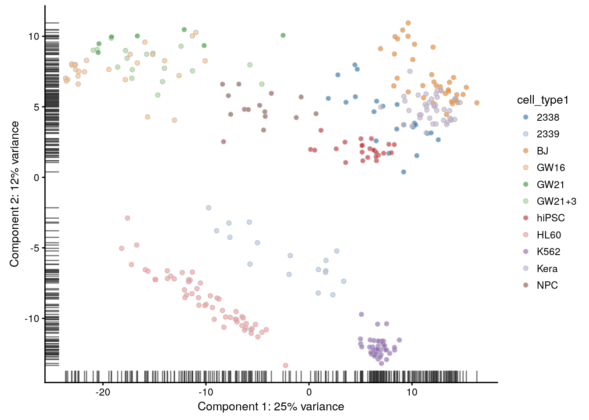
5.2.2 SC3
Let’s run SC3 clustering on the Deng data. The advantage of the SC3 is that it can directly ingest a SingleCellExperiment object.
Now let’s image we do not know the number of clusters k (cell types). SC3 can estimate a number of clusters for you:
deng <- sc3_estimate_k(deng)## Estimating k...metadata(deng)$sc3$k_estimation## [1] 6Interestingly, the number of cell types predicted by SC3 is smaller than in the original data annotation. However, early, mid and late stages of different cell types together, we will have exactly 6 cell types. We store the merged cell types in cell_type1 column of the colData slot:
plotPCA(deng, colour_by = "cell_type1")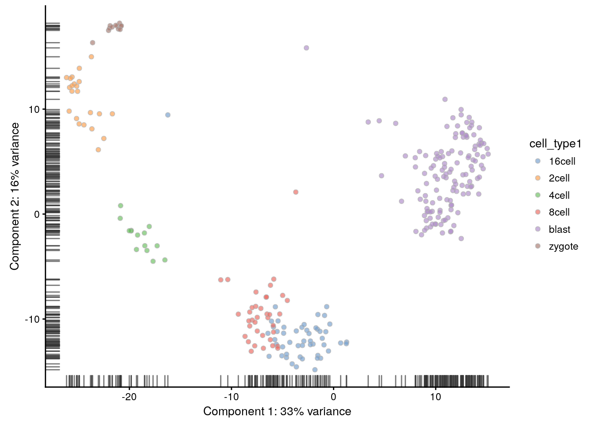
Now we are ready to run SC3 (we also ask it to calculate biological properties of the clusters):
deng <- sc3(deng, ks = 10, biology = TRUE)## Setting SC3 parameters...## Setting a range of k...## Calculating distances between the cells...## Performing transformations and calculating eigenvectors...## Performing k-means clustering...## Calculating consensus matrix...## Calculating biology...SC3 result consists of several different outputs (please look in (Kiselev et al. 2016) and SC3 vignette for more details). Here we show some of them:
Consensus matrix:
sc3_plot_consensus(deng, k = 10, show_pdata = "cell_type2")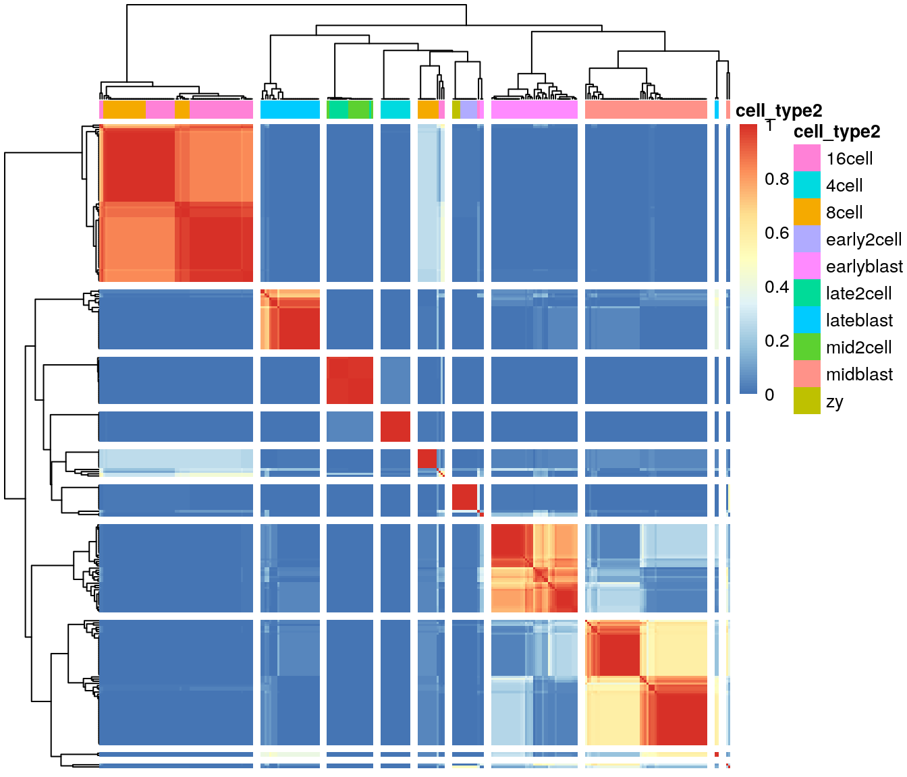
adjustedRandIndex(colData(deng)$cell_type2, colData(deng)$sc3_10_clusters)## [1] 0.7705208Silhouette plot:
sc3_plot_silhouette(deng, k = 10)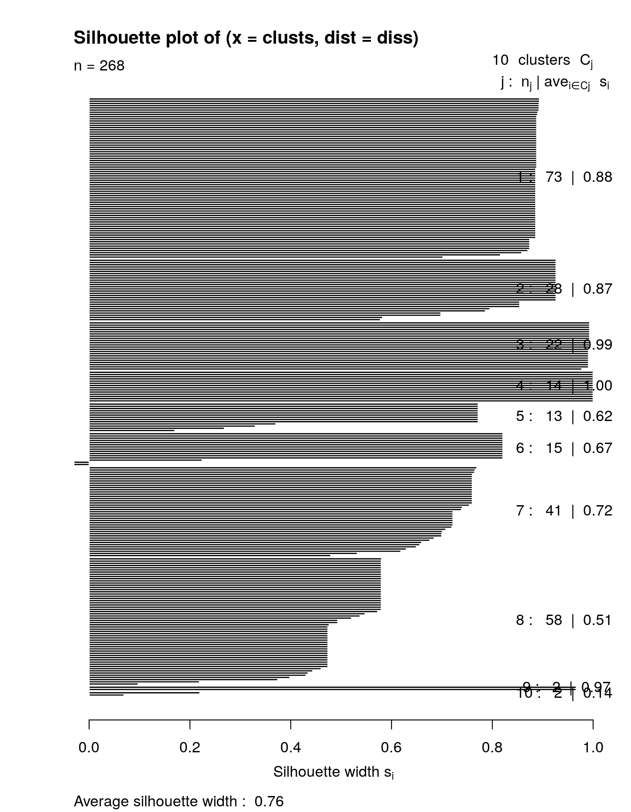
Heatmap of the expression matrix:
sc3_plot_expression(deng, k = 10, show_pdata = "cell_type2")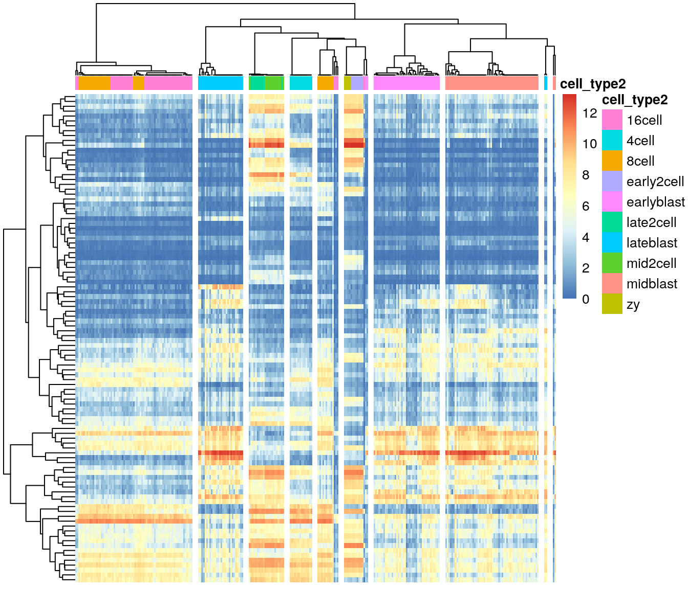
Identified marker genes:
sc3_plot_markers(deng, k = 10, show_pdata = "cell_type2")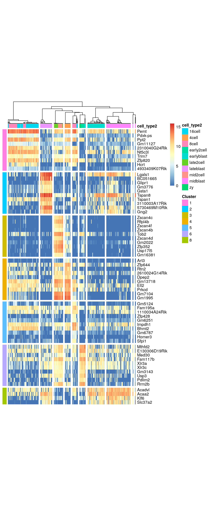
PCA plot with highlighted SC3 clusters:
plotPCA(deng, colour_by = "sc3_10_clusters")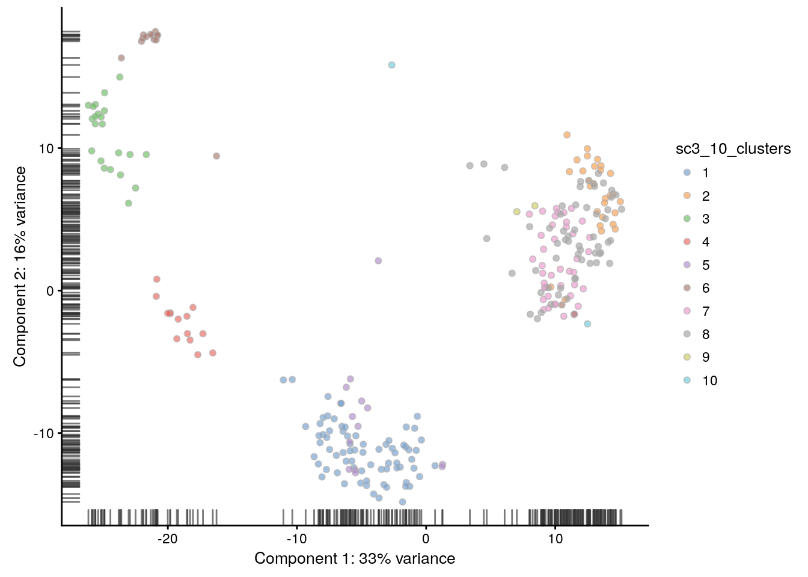
Note, that one can also run SC3 in an interactive Shiny session:
sc3_interactive(deng)This command will open SC3 in a web browser.
Exercise 1: Run
SC3for \(k\) from 8 to 12 and explore different clustering solutions in your web browser.Exercise 2: Which clusters are the most stable when \(k\) is changed from 8 to 12? (Look at the “Stability” tab)
Exercise 3: Check out differentially expressed genes and marker genes for the obtained clusterings. Please use \(k=10\).
Exercise 4: Change the marker genes threshold (the default is 0.85). Does SC3 find more marker genes?
5.2.3 pcaReduce
pcaReduce operates directly on the expression matrix. It is recommended to use a gene filter and log transformation before running pcaReduce. We will use the default SC3 gene filter (note that the exprs slot of a scater object is log-transformed by default).
# use the same gene filter as in SC3
input <- logcounts(deng[rowData(deng)$sc3_gene_filter, ])There are several parameters used by pcaReduce: * nbt defines a number of pcaReduce runs (it is stochastic and may have different solutions after different runs) * q defines number of dimensions to start clustering with. The output will contain partitions for all \(k\) from 2 to q+1. * method defines a method used for clustering. S - to perform sampling based merging, M - to perform merging based on largest probability.
We will run pcaReduce 1 time:
# run pcaReduce 1 time creating hierarchies from 1 to 30 clusters
pca.red <- PCAreduce(t(input), nbt = 1, q = 30, method = 'S')[[1]]colData(deng)$pcaReduce <- as.character(pca.red[,32 - 10])
plotPCA(deng, colour_by = "pcaReduce")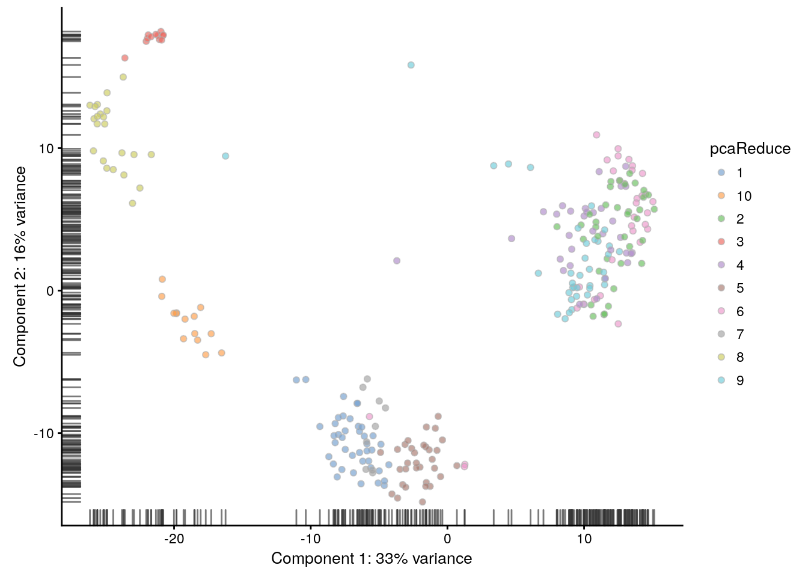
Exercise 5: Run pcaReduce for \(k=2\) and plot a similar PCA plot. Does it look good?
Hint: When running pcaReduce for different \(k\)s you do not need to rerun PCAreduce function, just use already calculated pca.red object.
Figure 5.6: Clustering solutions of pcaReduce method for \(k=2\).
Exercise 6: Compare the results between SC3 and pcaReduce for \(k=10\). What is the main difference between the solutions provided by the two different methods?
Our solution: 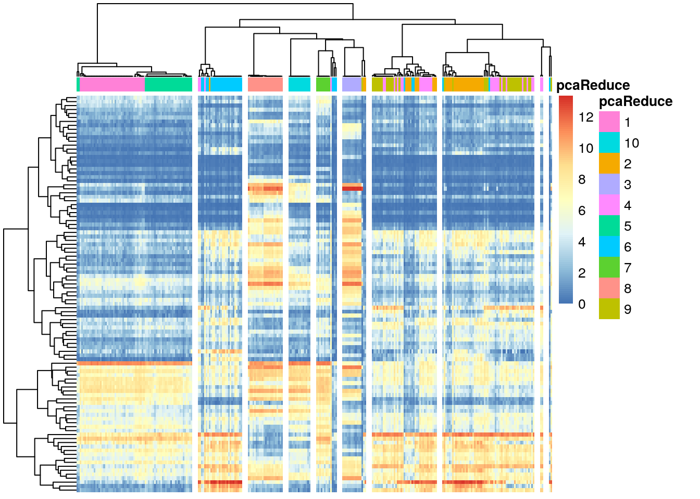
5.2.4 tSNE + kmeans
tSNE plots that we saw before (4.10.3) when used the scater package are made by using the Rtsne and ggplot2 packages. Here we will do the same:
deng <- plotTSNE(deng, rand_seed = 1, return_SCE = TRUE)Figure 5.7: tSNE map of the patient data
Note that all points on the plot above are black. This is different from what we saw before, when the cells were coloured based on the annotation. Here we do not have any annotation and all cells come from the same batch, therefore all dots are black.
Now we are going to apply k-means clustering algorithm to the cloud of points on the tSNE map. How many groups do you see in the cloud?
We will start with \(k=8\):
colData(deng)$tSNE_kmeans <- as.character(kmeans(deng@reducedDims$TSNE, centers = 8)$clust)
plotTSNE(deng, rand_seed = 1, colour_by = "tSNE_kmeans")Figure 5.8: tSNE map of the patient data with 8 colored clusters, identified by the k-means clustering algorithm
Exercise 7: Make the same plot for \(k=10\).
Exercise 8: Compare the results between SC3 and tSNE+kmeans. Can the results be improved by changing the perplexity parameter?
Our solution: 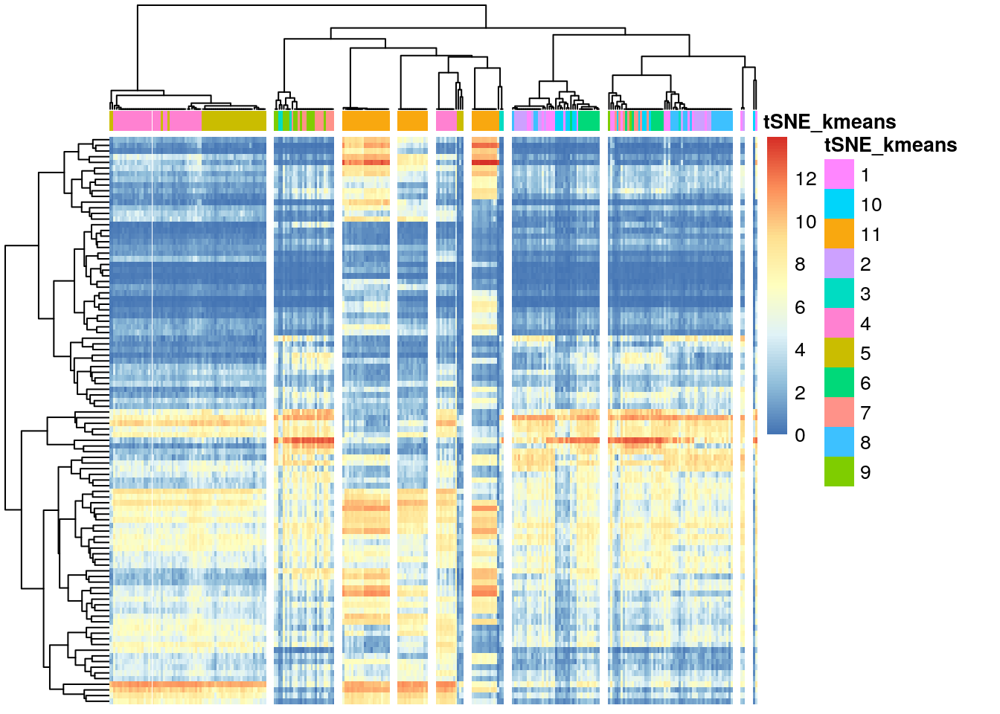
As you may have noticed, both pcaReduce and tSNE+kmeans are stochastic and give different results every time they are run. To get a better overview of the solutions, we need to run the methods multiple times. SC3 is also stochastic, but thanks to the consensus step, it is more robust and less likely to produce different outcomes.
5.2.5 SNN-Cliq
Here we run SNN-cliq with te default parameters provided in the author’s example:
distan <- "euclidean"
par.k <- 3
par.r <- 0.7
par.m <- 0.5
# construct a graph
scRNA.seq.funcs::SNN(
data = t(input),
outfile = "snn-cliq.txt",
k = par.k,
distance = distan
)
# find clusters in the graph
snn.res <-
system(
paste0(
"python snn-cliq/Cliq.py ",
"-i snn-cliq.txt ",
"-o res-snn-cliq.txt ",
"-r ", par.r,
" -m ", par.m
),
intern = TRUE
)
cat(paste(snn.res, collapse = "\n"))## input file snn-cliq.txt
## find 66 quasi-cliques
## merged into 29 clusters
## unique assign donesnn.res <- read.table("res-snn-cliq.txt")
# remove files that were created during the analysis
system("rm snn-cliq.txt res-snn-cliq.txt")
colData(deng)$SNNCliq <- as.character(snn.res[,1])
plotPCA(deng, colour_by = "SNNCliq")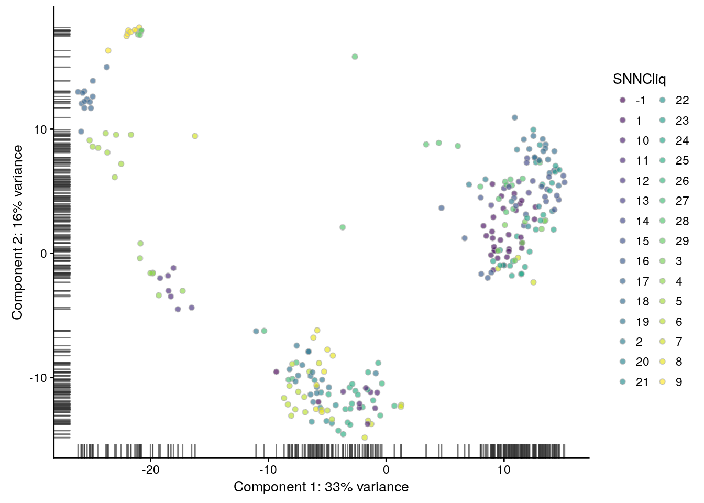
Exercise 9: Compare the results between SC3 and SNN-Cliq.
Our solution: 
5.2.6 SINCERA
As mentioned in the previous chapter SINCERA is based on hierarchical clustering. One important thing to keep in mind is that it performs a gene-level z-score transformation before doing clustering:
# perform gene-by-gene per-sample z-score transformation
dat <- apply(input, 1, function(y) scRNA.seq.funcs::z.transform.helper(y))
# hierarchical clustering
dd <- as.dist((1 - cor(t(dat), method = "pearson"))/2)
hc <- hclust(dd, method = "average")If the number of cluster is not known SINCERA can identify k as the minimum height of the hierarchical tree that generates no more than a specified number of singleton clusters (clusters containing only 1 cell)
num.singleton <- 0
kk <- 1
for (i in 2:dim(dat)[2]) {
clusters <- cutree(hc, k = i)
clustersizes <- as.data.frame(table(clusters))
singleton.clusters <- which(clustersizes$Freq < 2)
if (length(singleton.clusters) <= num.singleton) {
kk <- i
} else {
break;
}
}
cat(kk)## 6Let’s now visualize the SINCERA results as a heatmap:
pheatmap(
t(dat),
cluster_cols = hc,
cutree_cols = kk,
kmeans_k = 100,
show_rownames = FALSE
)Figure 5.9: Clustering solutions of SINCERA method using found \(k\)
Exercise 10: Compare the results between SC3 and SNN-Cliq.
Our solution: 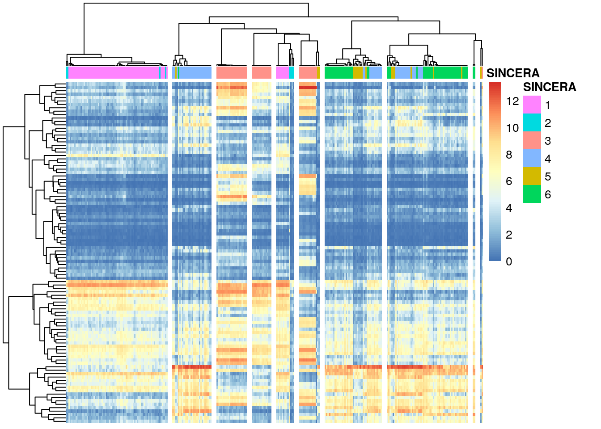
Exercise 11: Is using the singleton cluster criteria for finding k a good idea?
5.2.7 sessionInfo()
## R version 3.4.2 (2017-09-28)
## Platform: x86_64-pc-linux-gnu (64-bit)
## Running under: Debian GNU/Linux buster/sid
##
## Matrix products: default
## BLAS: /usr/lib/x86_64-linux-gnu/blas/libblas.so.3.7.1
## LAPACK: /usr/lib/x86_64-linux-gnu/lapack/liblapack.so.3.7.1
##
## locale:
## [1] LC_CTYPE=en_US.UTF-8 LC_NUMERIC=C
## [3] LC_TIME=en_US.UTF-8 LC_COLLATE=en_US.UTF-8
## [5] LC_MONETARY=en_US.UTF-8 LC_MESSAGES=en_US.UTF-8
## [7] LC_PAPER=en_US.UTF-8 LC_NAME=C
## [9] LC_ADDRESS=C LC_TELEPHONE=C
## [11] LC_MEASUREMENT=en_US.UTF-8 LC_IDENTIFICATION=C
##
## attached base packages:
## [1] stats4 parallel methods stats graphics grDevices utils
## [8] datasets base
##
## other attached packages:
## [1] irr_0.84 lpSolve_5.6.13
## [3] pheatmap_1.0.8 scater_1.5.21
## [5] ggplot2_2.2.1 SC3_1.5.6
## [7] SingleCellExperiment_0.99.4 SummarizedExperiment_1.6.5
## [9] DelayedArray_0.2.7 matrixStats_0.52.2
## [11] GenomicRanges_1.28.6 GenomeInfoDb_1.12.3
## [13] IRanges_2.10.5 S4Vectors_0.14.7
## [15] pcaReduce_1.0 mclust_5.3
## [17] mnormt_1.5-5 pcaMethods_1.68.0
## [19] Biobase_2.36.2 BiocGenerics_0.22.1
## [21] knitr_1.17
##
## loaded via a namespace (and not attached):
## [1] Rtsne_0.13 ggbeeswarm_0.6.0
## [3] colorspace_1.3-2 rjson_0.2.15
## [5] class_7.3-14 rprojroot_1.2
## [7] XVector_0.16.0 bit64_0.9-7
## [9] AnnotationDbi_1.38.2 mvtnorm_1.0-6
## [11] scRNA.seq.funcs_0.1.0 codetools_0.2-15
## [13] tximport_1.4.0 doParallel_1.0.11
## [15] robustbase_0.92-7 cluster_2.0.6
## [17] shinydashboard_0.6.1 shiny_1.0.5
## [19] rrcov_1.4-3 compiler_3.4.2
## [21] backports_1.1.1 assertthat_0.2.0
## [23] Matrix_1.2-11 lazyeval_0.2.0
## [25] limma_3.32.10 htmltools_0.3.6
## [27] tools_3.4.2 bindrcpp_0.2
## [29] gtable_0.2.0 glue_1.1.1
## [31] GenomeInfoDbData_0.99.0 reshape2_1.4.2
## [33] dplyr_0.7.4 doRNG_1.6.6
## [35] Rcpp_0.12.13 gdata_2.18.0
## [37] iterators_1.0.8 stringr_1.2.0
## [39] mime_0.5 hypergeo_1.2-13
## [41] rngtools_1.2.4 gtools_3.5.0
## [43] WriteXLS_4.0.0 statmod_1.4.30
## [45] XML_3.98-1.9 edgeR_3.18.1
## [47] DEoptimR_1.0-8 MASS_7.3-47
## [49] zlibbioc_1.22.0 scales_0.5.0
## [51] rhdf5_2.20.0 RColorBrewer_1.1-2
## [53] yaml_2.1.14 memoise_1.1.0
## [55] gridExtra_2.3 pkgmaker_0.22
## [57] biomaRt_2.32.1 stringi_1.1.5
## [59] RSQLite_2.0 highr_0.6
## [61] pcaPP_1.9-72 foreach_1.4.3
## [63] orthopolynom_1.0-5 e1071_1.6-8
## [65] contfrac_1.1-11 caTools_1.17.1
## [67] moments_0.14 rlang_0.1.2
## [69] pkgconfig_2.0.1 bitops_1.0-6
## [71] evaluate_0.10.1 lattice_0.20-35
## [73] ROCR_1.0-7 bindr_0.1
## [75] labeling_0.3 cowplot_0.8.0
## [77] bit_1.1-12 deSolve_1.20
## [79] plyr_1.8.4 magrittr_1.5
## [81] bookdown_0.5 R6_2.2.2
## [83] gplots_3.0.1 DBI_0.7
## [85] RCurl_1.95-4.8 tibble_1.3.4
## [87] KernSmooth_2.23-15 rmarkdown_1.6
## [89] viridis_0.4.0 locfit_1.5-9.1
## [91] grid_3.4.2 data.table_1.10.4-2
## [93] blob_1.1.0 digest_0.6.12
## [95] xtable_1.8-2 httpuv_1.3.5
## [97] elliptic_1.3-7 munsell_0.4.3
## [99] registry_0.3 beeswarm_0.2.3
## [101] viridisLite_0.2.0 vipor_0.4.5set.seed(1234567)5.3 Seurat
Seurat is a popular R package that is designed for QC, analysis, and exploration of single cell RNA-seq data, i.e. many of the tasks covered in this course. Although the authors provide several tutorials, here we provide a brief overview by following an example created by the authors of Seurat (2,800 Peripheral Blood Mononuclear Cells). We mostly use default values in various function calls, for more details please consult the documentation and the authors. We start by loading the Deng data that we have used before:
deng <- readRDS("deng/deng-reads.rds")First, we initialize the Seurat object with the raw (non-normalized data). Keep all genes expressed in >= 3 cells. Keep all cells with at least 200 detected genes:
library(SingleCellExperiment)
library(Seurat)
seuset <- CreateSeuratObject(
raw.data = counts(deng),
min.cells = 3,
min.genes = 200
)VlnPlot(object = seuset, features.plot = c("nGene", "nUMI"), nCol = 3)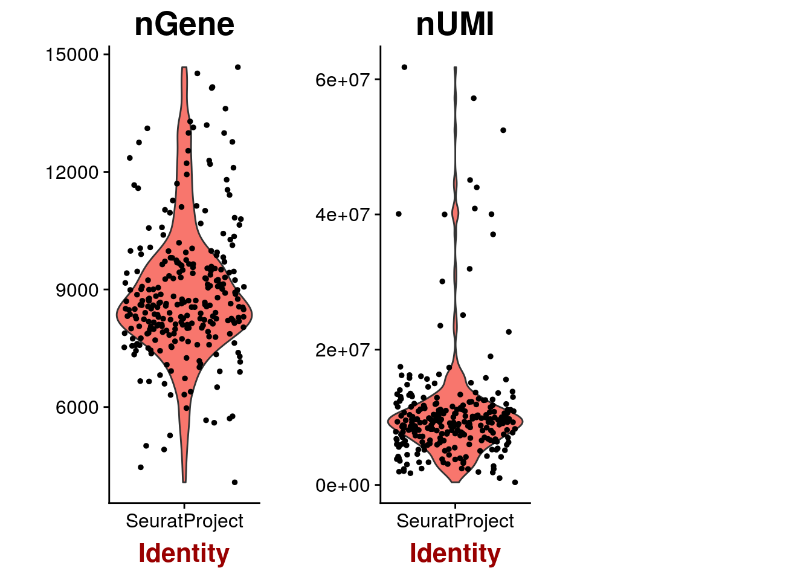
GenePlot(object = seuset, gene1 = "nUMI", gene2 = "nGene")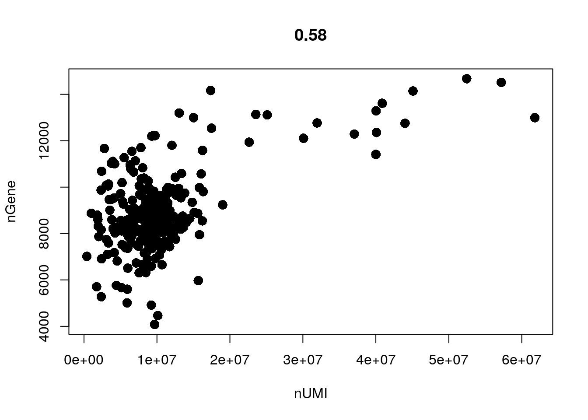
seuset <- NormalizeData(object = seuset, normalization.method = "LogNormalize",
scale.factor = 10000)
seuset <- FindVariableGenes(
object = seuset
)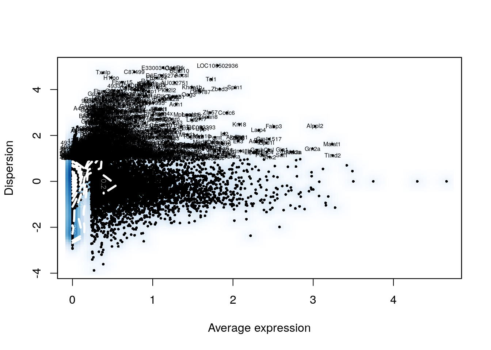
length(x = seuset@var.genes)## [1] 1459seuset <- ScaleData(object = seuset, vars.to.regress = c("nUMI"))## [1] "Regressing out nUMI"
##
|
| | 0%
|
|= | 1%
|
|= | 2%
|
|== | 2%
|
|== | 3%
|
|== | 4%
|
|=== | 4%
|
|=== | 5%
|
|==== | 6%
|
|===== | 7%
|
|===== | 8%
|
|====== | 8%
|
|====== | 9%
|
|====== | 10%
|
|======= | 10%
|
|======= | 11%
|
|======= | 12%
|
|======== | 12%
|
|======== | 13%
|
|========= | 14%
|
|========== | 15%
|
|========== | 16%
|
|=========== | 16%
|
|=========== | 17%
|
|=========== | 18%
|
|============ | 18%
|
|============ | 19%
|
|============= | 20%
|
|============== | 21%
|
|============== | 22%
|
|=============== | 22%
|
|=============== | 23%
|
|=============== | 24%
|
|================ | 24%
|
|================ | 25%
|
|================= | 26%
|
|================== | 27%
|
|================== | 28%
|
|=================== | 28%
|
|=================== | 29%
|
|=================== | 30%
|
|==================== | 30%
|
|==================== | 31%
|
|==================== | 32%
|
|===================== | 32%
|
|===================== | 33%
|
|====================== | 34%
|
|======================= | 35%
|
|======================= | 36%
|
|======================== | 36%
|
|======================== | 37%
|
|======================== | 38%
|
|========================= | 38%
|
|========================= | 39%
|
|========================== | 40%
|
|=========================== | 41%
|
|=========================== | 42%
|
|============================ | 42%
|
|============================ | 43%
|
|============================ | 44%
|
|============================= | 44%
|
|============================= | 45%
|
|============================== | 46%
|
|=============================== | 47%
|
|=============================== | 48%
|
|================================ | 48%
|
|================================ | 49%
|
|================================ | 50%
|
|================================= | 50%
|
|================================= | 51%
|
|================================= | 52%
|
|================================== | 52%
|
|================================== | 53%
|
|=================================== | 54%
|
|==================================== | 55%
|
|==================================== | 56%
|
|===================================== | 56%
|
|===================================== | 57%
|
|===================================== | 58%
|
|====================================== | 58%
|
|====================================== | 59%
|
|======================================= | 60%
|
|======================================== | 61%
|
|======================================== | 62%
|
|========================================= | 62%
|
|========================================= | 63%
|
|========================================= | 64%
|
|========================================== | 64%
|
|========================================== | 65%
|
|=========================================== | 66%
|
|============================================ | 67%
|
|============================================ | 68%
|
|============================================= | 68%
|
|============================================= | 69%
|
|============================================= | 70%
|
|============================================== | 70%
|
|============================================== | 71%
|
|============================================== | 72%
|
|=============================================== | 72%
|
|=============================================== | 73%
|
|================================================ | 74%
|
|================================================= | 75%
|
|================================================= | 76%
|
|================================================== | 76%
|
|================================================== | 77%
|
|================================================== | 78%
|
|=================================================== | 78%
|
|=================================================== | 79%
|
|==================================================== | 80%
|
|===================================================== | 81%
|
|===================================================== | 82%
|
|====================================================== | 82%
|
|====================================================== | 83%
|
|====================================================== | 84%
|
|======================================================= | 84%
|
|======================================================= | 85%
|
|======================================================== | 86%
|
|========================================================= | 87%
|
|========================================================= | 88%
|
|========================================================== | 88%
|
|========================================================== | 89%
|
|========================================================== | 90%
|
|=========================================================== | 90%
|
|=========================================================== | 91%
|
|=========================================================== | 92%
|
|============================================================ | 92%
|
|============================================================ | 93%
|
|============================================================= | 94%
|
|============================================================== | 95%
|
|============================================================== | 96%
|
|=============================================================== | 96%
|
|=============================================================== | 97%
|
|=============================================================== | 98%
|
|================================================================ | 98%
|
|================================================================ | 99%
|
|=================================================================| 100%
## [1] "Scaling data matrix"
##
|
| | 0%
|
|=================================================================| 100%seuset <- RunPCA(
object = seuset,
pc.genes = seuset@var.genes,
do.print = TRUE,
pcs.print = 1:5,
genes.print = 5
)## [1] "PC1"
## [1] "Lrpap1" "Actg1" "Snx2" "Gm2a" "Psap"
## [1] ""
## [1] "Gm13023" "Gm10436" "Zbed3" "Oog1" "Trim61"
## [1] ""
## [1] ""
## [1] "PC2"
## [1] "Lrrfip1" "BC053393" "Id2" "Krt8" "Gsta4"
## [1] ""
## [1] "Gm11517" "Obox6" "Trim43b" "Trim43c" "Pdxk"
## [1] ""
## [1] ""
## [1] "PC3"
## [1] "Obox3" "G2e3" "Sfi1" "Gm9125" "Gm12789"
## [1] ""
## [1] "Fam46c" "Casp8" "Gja4" "Pnpla3" "Bhmt"
## [1] ""
## [1] ""
## [1] "PC4"
## [1] "Upp1" "Col4a1" "Fn1" "Baz2b" "Tdgf1"
## [1] ""
## [1] "Slc5a6" "Chka" "Cldn7" "Slc4a11" "Gpd1l"
## [1] ""
## [1] ""
## [1] "PC5"
## [1] "BC051665" "3110003A17Rik" "Gsta1" "Acpp"
## [5] "4930506M07Rik"
## [1] ""
## [1] "Slc20a1" "Abca3" "Abcd4" "Cdh1" "Lrp2"
## [1] ""
## [1] ""VizPCA(object = seuset, pcs.use = 1:2)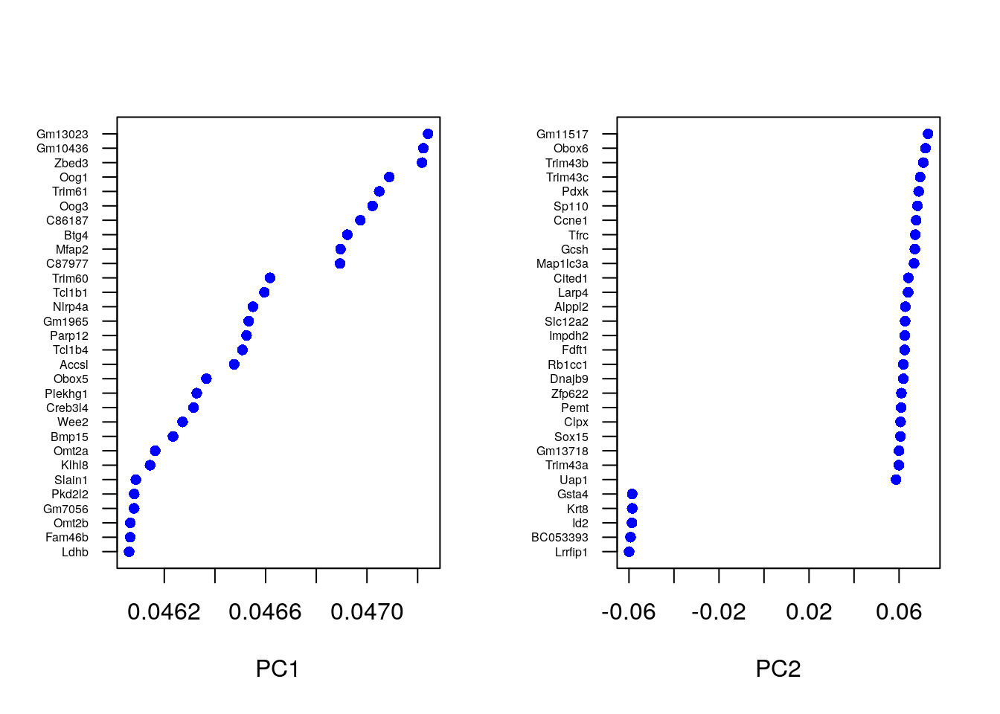
PCAPlot(object = seuset, dim.1 = 1, dim.2 = 2)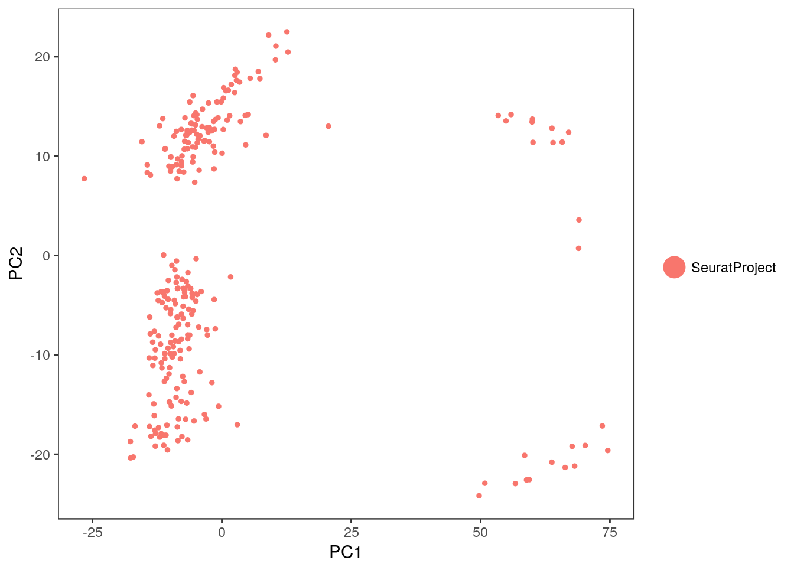
seuset <- ProjectPCA(object = seuset, do.print = FALSE)
PCHeatmap(
object = seuset,
pc.use = 1:6,
cells.use = 500,
do.balanced = TRUE,
label.columns = FALSE,
use.full = FALSE
)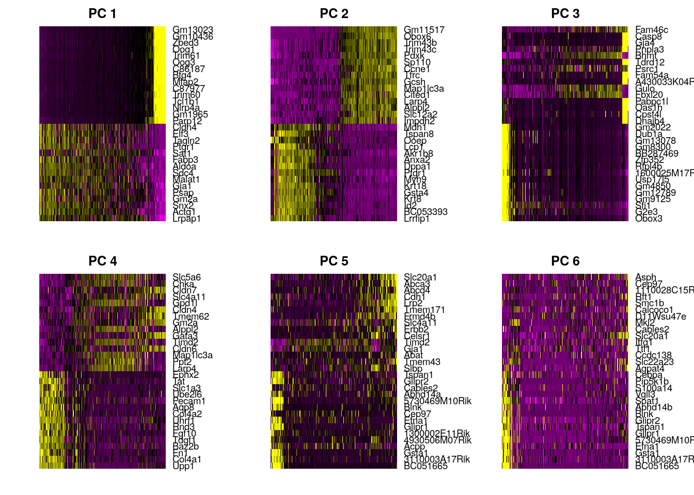
seuset <- JackStraw(
object = seuset,
num.replicate = 100,
do.print = FALSE
)
JackStrawPlot(object = seuset, PCs = 1:6)## Warning: Removed 6126 rows containing missing values (geom_point).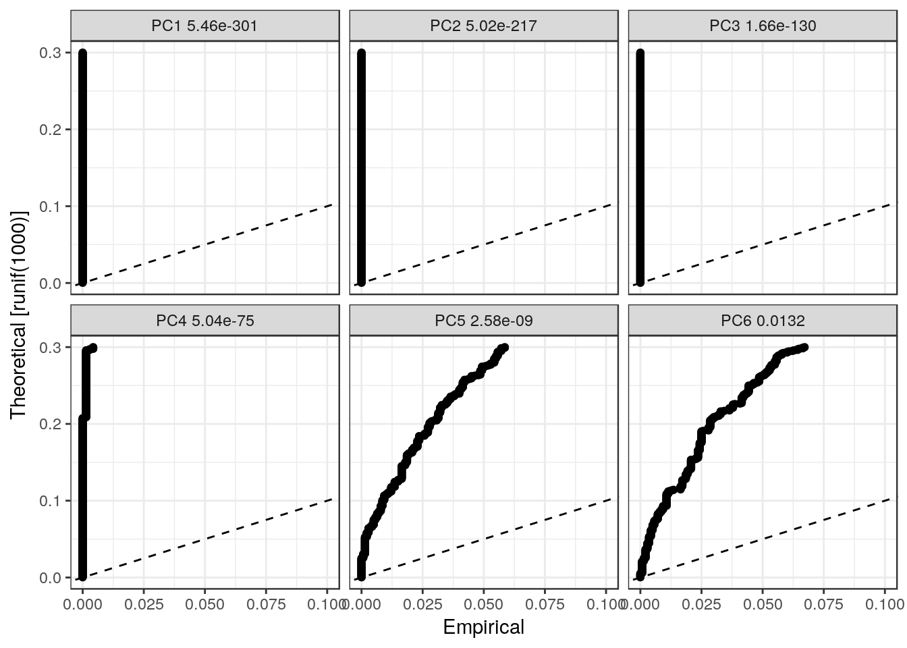
PCElbowPlot(object = seuset)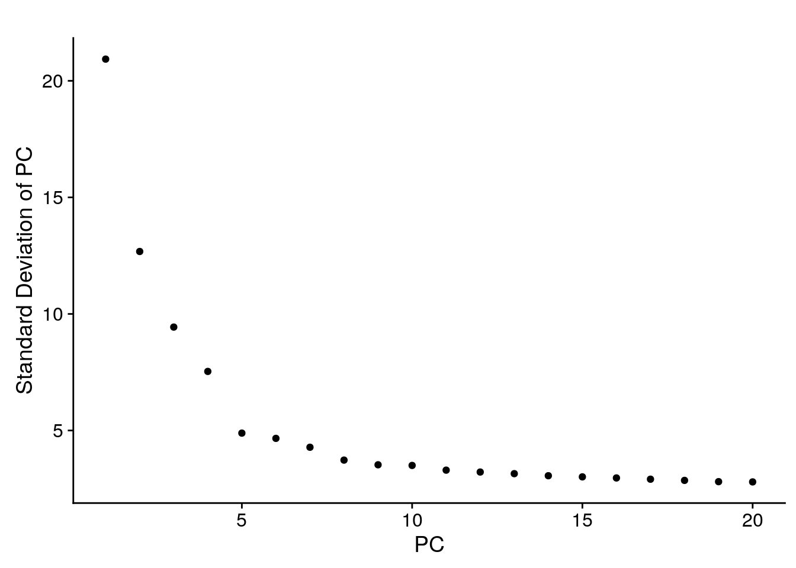
seuset <- FindClusters(
object = seuset,
reduction.type = "pca",
dims.use = 1:5,
resolution = 0.6,
print.output = 0,
save.SNN = TRUE
)
table(seuset@ident)##
## 0 1 2 3
## 88 74 60 46mclust::adjustedRandIndex(colData(deng)$cell_type2, seuset@ident)## [1] 0.3820495seuset <- RunTSNE(
object = seuset,
dims.use = 1:5,
do.fast = TRUE
)Exercise 12: Compare the results between SC3 and Seurat.
Our solution:
colData(deng)$Seurat <- as.character(seuset@ident)
sc3_plot_expression(deng, k = 10, show_pdata = "Seurat")Seurat can also find marker genes, e.g. marker genes for cluster 2:
markers <- FindMarkers(seuset, 2)
FeaturePlot(seuset,
head(rownames(markers)),
cols.use = c("lightgrey", "blue"),
nCol = 3)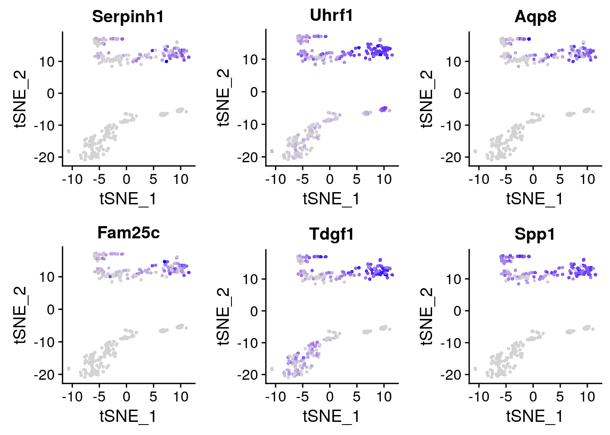
Exercise 13: Compare marker genes provided by Seurat and SC3.
5.3.1 sessionInfo()
## R version 3.4.2 (2017-09-28)
## Platform: x86_64-pc-linux-gnu (64-bit)
## Running under: Debian GNU/Linux buster/sid
##
## Matrix products: default
## BLAS: /usr/lib/x86_64-linux-gnu/blas/libblas.so.3.7.1
## LAPACK: /usr/lib/x86_64-linux-gnu/lapack/liblapack.so.3.7.1
##
## locale:
## [1] LC_CTYPE=en_US.UTF-8 LC_NUMERIC=C
## [3] LC_TIME=en_US.UTF-8 LC_COLLATE=en_US.UTF-8
## [5] LC_MONETARY=en_US.UTF-8 LC_MESSAGES=en_US.UTF-8
## [7] LC_PAPER=en_US.UTF-8 LC_NAME=C
## [9] LC_ADDRESS=C LC_TELEPHONE=C
## [11] LC_MEASUREMENT=en_US.UTF-8 LC_IDENTIFICATION=C
##
## attached base packages:
## [1] parallel stats4 methods stats graphics grDevices utils
## [8] datasets base
##
## other attached packages:
## [1] Seurat_2.1.0 Matrix_1.2-11
## [3] cowplot_0.8.0 ggplot2_2.2.1
## [5] SingleCellExperiment_0.99.4 SummarizedExperiment_1.6.5
## [7] DelayedArray_0.2.7 matrixStats_0.52.2
## [9] Biobase_2.36.2 GenomicRanges_1.28.6
## [11] GenomeInfoDb_1.12.3 IRanges_2.10.5
## [13] S4Vectors_0.14.7 BiocGenerics_0.22.1
## [15] knitr_1.17
##
## loaded via a namespace (and not attached):
## [1] backports_1.1.1 Hmisc_4.0-3
## [3] VGAM_1.0-4 NMF_0.20.6
## [5] sn_1.5-0 plyr_1.8.4
## [7] igraph_1.1.2 lazyeval_0.2.0
## [9] splines_3.4.2 gridBase_0.4-7
## [11] digest_0.6.12 foreach_1.4.3
## [13] htmltools_0.3.6 lars_1.2
## [15] gdata_2.18.0 magrittr_1.5
## [17] checkmate_1.8.5 cluster_2.0.6
## [19] doParallel_1.0.11 mixtools_1.1.0
## [21] ROCR_1.0-7 sfsmisc_1.1-1
## [23] recipes_0.1.0 gower_0.1.2
## [25] dimRed_0.1.0 R.utils_2.5.0
## [27] colorspace_1.3-2 dplyr_0.7.4
## [29] RCurl_1.95-4.8 bindr_0.1
## [31] survival_2.41-3 iterators_1.0.8
## [33] ape_4.1 glue_1.1.1
## [35] DRR_0.0.2 registry_0.3
## [37] gtable_0.2.0 ipred_0.9-6
## [39] zlibbioc_1.22.0 XVector_0.16.0
## [41] kernlab_0.9-25 ddalpha_1.3.1
## [43] prabclus_2.2-6 DEoptimR_1.0-8
## [45] scales_0.5.0 mvtnorm_1.0-6
## [47] rngtools_1.2.4 Rcpp_0.12.13
## [49] dtw_1.18-1 xtable_1.8-2
## [51] htmlTable_1.9 tclust_1.3-1
## [53] foreign_0.8-69 proxy_0.4-17
## [55] mclust_5.3 SDMTools_1.1-221
## [57] Formula_1.2-2 tsne_0.1-3
## [59] lava_1.5.1 prodlim_1.6.1
## [61] htmlwidgets_0.9 FNN_1.1
## [63] gplots_3.0.1 RColorBrewer_1.1-2
## [65] fpc_2.1-10 acepack_1.4.1
## [67] modeltools_0.2-21 ica_1.0-1
## [69] pkgconfig_2.0.1 R.methodsS3_1.7.1
## [71] flexmix_2.3-14 nnet_7.3-12
## [73] caret_6.0-77 labeling_0.3
## [75] rlang_0.1.2 reshape2_1.4.2
## [77] munsell_0.4.3 tools_3.4.2
## [79] ranger_0.8.0 ggridges_0.4.1
## [81] evaluate_0.10.1 stringr_1.2.0
## [83] yaml_2.1.14 ModelMetrics_1.1.0
## [85] robustbase_0.92-7 caTools_1.17.1
## [87] purrr_0.2.4 bindrcpp_0.2
## [89] pbapply_1.3-3 nlme_3.1-131
## [91] R.oo_1.21.0 RcppRoll_0.2.2
## [93] compiler_3.4.2 ggjoy_0.4.0
## [95] tibble_1.3.4 stringi_1.1.5
## [97] lattice_0.20-35 trimcluster_0.1-2
## [99] diffusionMap_1.1-0 data.table_1.10.4-2
## [101] bitops_1.0-6 irlba_2.3.1
## [103] R6_2.2.2 latticeExtra_0.6-28
## [105] bookdown_0.5 KernSmooth_2.23-15
## [107] gridExtra_2.3 codetools_0.2-15
## [109] MASS_7.3-47 gtools_3.5.0
## [111] assertthat_0.2.0 CVST_0.2-1
## [113] pkgmaker_0.22 rprojroot_1.2
## [115] withr_2.0.0 mnormt_1.5-5
## [117] GenomeInfoDbData_0.99.0 diptest_0.75-7
## [119] grid_3.4.2 rpart_4.1-11
## [121] timeDate_3012.100 tidyr_0.7.2
## [123] class_7.3-14 rmarkdown_1.6
## [125] segmented_0.5-2.2 Rtsne_0.13
## [127] numDeriv_2016.8-1 scatterplot3d_0.3-40
## [129] lubridate_1.6.0 base64enc_0.1-35.4 Feature Selection
library(scRNA.seq.funcs)
library(matrixStats)
library(M3Drop)
library(RColorBrewer)
library(SingleCellExperiment)
set.seed(1)Single-cell RNASeq is capable of measuring the expression of many thousands of genes in every cell. However, in most situations only a portion of those will show a response to the biological condition of interest, e.g. differences in cell-type, drivers of differentiation, respond to an environmental stimulus. Most genes detected in a scRNASeq experiment will only be detected at different levels due to technical noise. One consequence of this is that technical noise and batch effects can obscure the biological signal of interest.
Thus, it is often advantageous to perform feature selection to remove those genes which only exhibit technical noise from downstream analysis. Not only does this generally increase the signal:noise ratio in the data; it also reduces the computational complexity of analyses, by reducing the total amount of data to be processed.
For scRNASeq data, we will be focusing on unsupervised methods of feature selection which don’t require any a priori information, such as cell-type labels or biological group, since they are not available, or may be unreliable, for many experiments. In contrast, differential expression (Chapter ()) can be considered a form of supervised feature selection since it uses the known biological label of each sample to identify features (i.e. genes) which are expressed at different levels across groups.
For this section we will continue working with the Deng data.
deng <- readRDS("deng/deng-reads.rds")
cellLabels <- colData(deng)$cell_type2This data can be QCed and normalized for library size using M3Drop, which removes cells with few detected genes, removes undetected genes, and converts raw counts to CPM.
deng_list <- M3Drop::M3DropCleanData(
counts(deng),
labels = cellLabels,
min_detected_genes = 100,
is.counts = TRUE
)
expr_matrix <- deng_list$data # Normalized & filtered expression matrix
celltype_labs <- factor(deng_list$labels) # filtered cell-type labels
cell_colors <- brewer.pal(max(3,length(unique(celltype_labs))), "Set3")Exercise 1: How many cells & genes have been removed by this filtering?
5.4.1 Identifying Genes vs a Null Model
There are two main approaches to unsupervised feature selection. The first is to identify genes which behave differently from a null model describing just the technical noise expected in the dataset.
If the dataset contains spike-in RNAs they can be used to directly model technical noise. However, measurements of spike-ins may not experience the same technical noise as endogenous transcripts (Svensson et al., 2017). In addition, scRNASeq experiments often contain only a small number of spike-ins which reduces our confidence in fitted model parameters.
5.4.1.1 Highly Variable Genes
The first method proposed to identify features in scRNASeq datasets was to identify highly variable genes (HVG). HVG assumes that if genes have large differences in expression across cells some of those differences are due to biological difference between the cells rather than technical noise. However, because of the nature of count data, there is a positive relationship between the mean expression of a gene and the variance in the read counts across cells. This relationship must be corrected for to properly identify HVGs.
Exercise 2 Using the functions rowMeans and rowVars to plot the relationship between mean expression and variance for all genes in this dataset. (Hint: use log=“xy” to plot on a log-scale).
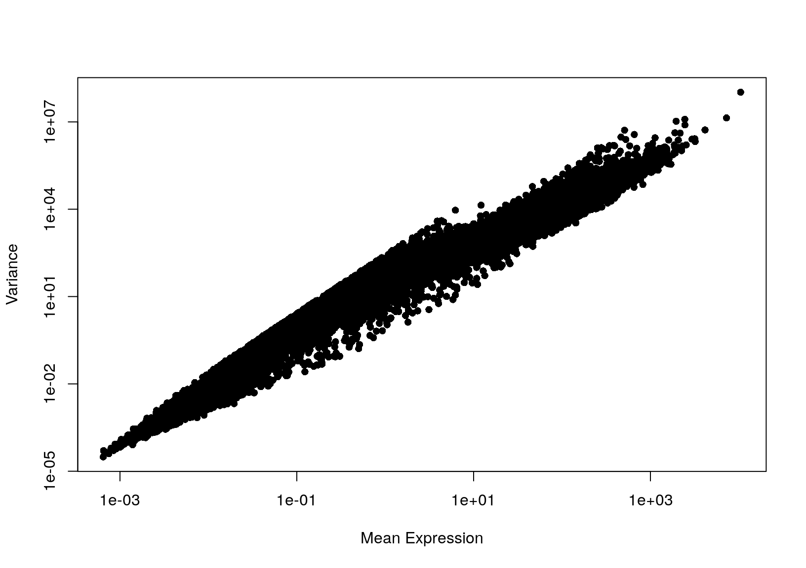 A popular method to correct for the relationship between variance and mean expression was proposed by Brennecke et al.. To use the Brennecke method, we first normalize for library size then calculate the mean and the square coefficient of variation (variation divided by the squared mean expression). A quadratic curve is fit to the relationship between these two variables for the ERCC spike-in, and then a chi-square test is used to find genes significantly above the curve. This method is included in the M3Drop package as the Brennecke_getVariableGenes(counts, spikes) function. However, this dataset does not contain spike-ins so we will use the entire dataset to estimate the technical noise.
In the figure below the red curve is the fitted technical noise model and the dashed line is the 95% CI. Pink dots are the genes with significant biological variability after multiple-testing correction.
Brennecke_HVG <- M3Drop::BrenneckeGetVariableGenes(
expr_matrix,
fdr = 0.01,
minBiolDisp = 0.5
)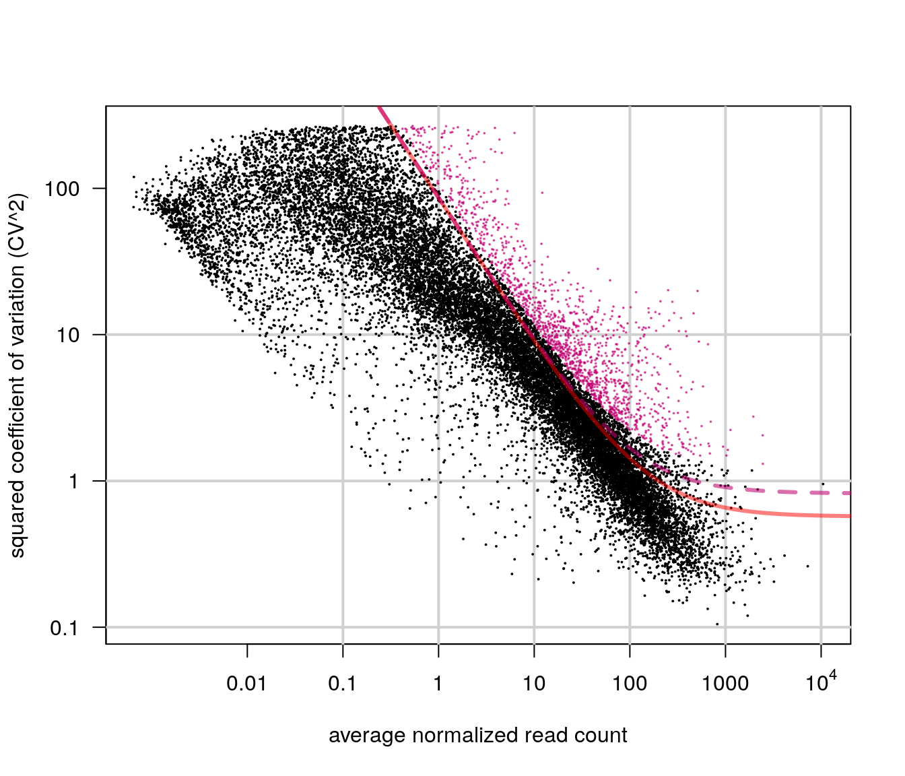
HVG_genes <- Brennecke_HVG$Gene5.4.1.2 High Dropout Genes
An alternative to finding HVGs is to identify genes with unexpectedly high numbers of zeros. The frequency of zeros, know as the “dropout rate”, is very closely related to expression level in scRNASeq data. Zeros are the dominant feature of single-cell RNASeq data, typically accounting for over half of the entries in the final expression matrix. These zeros predominantly result from the failure of mRNAs failing to be reversed transcribed (Andrews and Hemberg, 2016). Reverse transcription is an enzyme reaction thus can be modelled using the Michaelis-Menten equation:
\[P_{dropout} = 1 - S/(K + S)\]
where \(S\) is the mRNA concentration in the cell (we will estimate this as average expression) and \(K\) is the Michaelis-Menten constant.
Because the Michaelis-Menten equation is a convex non-linear function, genes which are differentially expression across two or more populations of cells in our dataset will be shifted up/right of the Michaelis-Menten model (see Figure below).
K = 49
S_sim = 10^seq(from=-3, to=4, by=0.05) # range of expression values
MM = 1-S_sim/(K+S_sim)
plot(S_sim, MM, type="l", lwd=3, xlab="Expression", ylab="Dropout Rate", xlim=c(1,1000))
S1 = 10; P1 = 1-S1/(K+S1) # Expression & dropouts for cells in condition 1
S2 = 750; P2 = 1-S2/(K+S2) # Expression & dropouts for cells in condition 2
points(c(S1,S2),c(P1,P2), pch=16, col="grey85", cex=3)
mix = 0.5; # proportion of cells in condition 1
points(S1*mix+S2*(1-mix), P1*mix+P2*(1-mix), pch=16, col="grey35", cex=3) Note: add
Note: add log="x" to the plot call above to see how this looks on the log scale, which is used in M3Drop figures.
Exercise 3: Produce the same plot as above with different expression levels (S1 & S2) and/or mixtures (mix).
We use M3Drop to identify significant outliers to the right of the MM curve. We also apply 1% FDR multiple testing correction:
M3Drop_genes <- M3Drop::M3DropFeatureSelection(
expr_matrix,
mt_method = "fdr",
mt_threshold = 0.01
)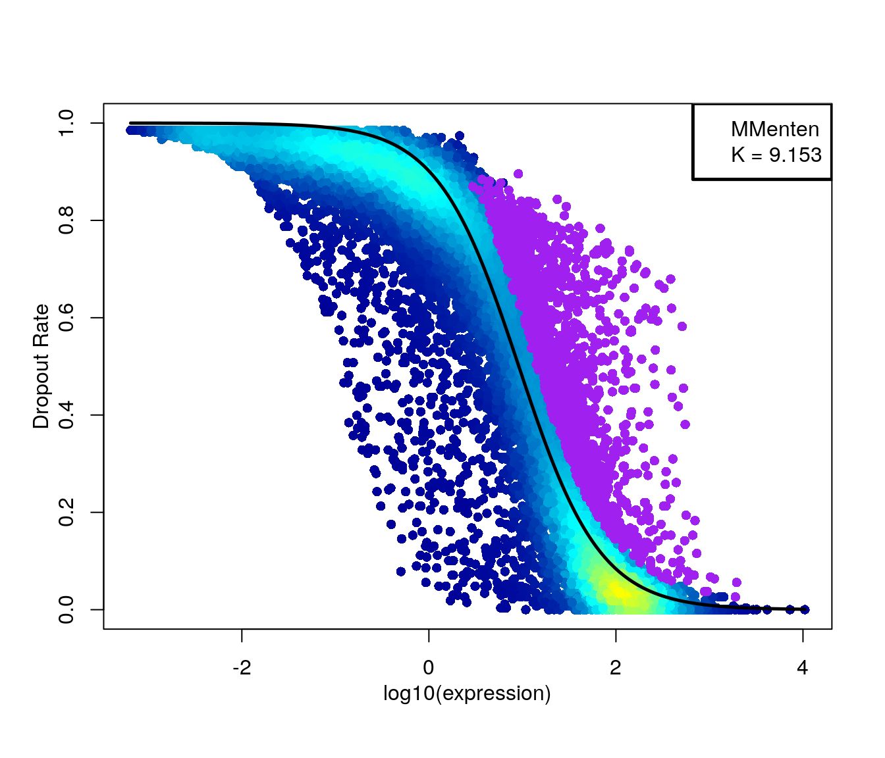
M3Drop_genes <- M3Drop_genes$GeneAn alternative method is contained in the M3Drop package that is tailored specifically for UMI-tagged data which generally contains many zeros resulting from low sequencing coverage in addition to those resulting from insufficient reverse-transcription. This model is the Depth-Adjusted Negative Binomial (DANB). This method describes each expression observation as a negative binomial model with a mean related to both the mean expression of the respective gene and the sequencing depth of the respective cell, and a variance related to the mean-expression of the gene.
Unlike the Michaelis-Menten and HVG methods there isn’t a reliable statistical test for features selected by this model, so we will consider the top 1500 genes instead.
deng_int <- NBumiConvertToInteger(counts(deng))
DANB_fit <- NBumiFitModel(deng_int) # DANB is fit to the raw count matrix
# Perform DANB feature selection
DropFS <- NBumiFeatureSelectionCombinedDrop(DANB_fit)
DANB_genes <- names(DropFS[1:1500])5.4.3 Comparing Methods
We can check whether the identified features really do represent genes differentially expressed between cell-types in this dataset.
M3Drop::M3DropExpressionHeatmap(
M3Drop_genes,
expr_matrix,
cell_labels = celltype_labs
)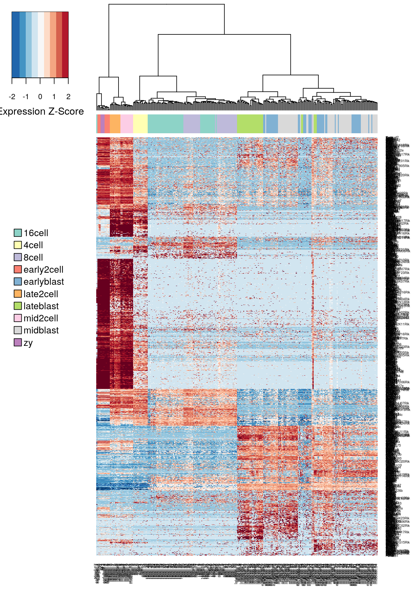
We can also consider how consistent each feature selection method is with the others using the Jaccard Index:
J <- sum(M3Drop_genes %in% HVG_genes)/length(unique(c(M3Drop_genes, HVG_genes)))Exercise 5 Plot the expression of the features for each of the other methods. Which appear to be differentially expressed? How consistent are the different methods for this dataset?
5.4.4 sessionInfo()
## R version 3.4.2 (2017-09-28)
## Platform: x86_64-pc-linux-gnu (64-bit)
## Running under: Debian GNU/Linux buster/sid
##
## Matrix products: default
## BLAS: /usr/lib/x86_64-linux-gnu/blas/libblas.so.3.7.1
## LAPACK: /usr/lib/x86_64-linux-gnu/lapack/liblapack.so.3.7.1
##
## locale:
## [1] LC_CTYPE=en_US.UTF-8 LC_NUMERIC=C
## [3] LC_TIME=en_US.UTF-8 LC_COLLATE=en_US.UTF-8
## [5] LC_MONETARY=en_US.UTF-8 LC_MESSAGES=en_US.UTF-8
## [7] LC_PAPER=en_US.UTF-8 LC_NAME=C
## [9] LC_ADDRESS=C LC_TELEPHONE=C
## [11] LC_MEASUREMENT=en_US.UTF-8 LC_IDENTIFICATION=C
##
## attached base packages:
## [1] parallel stats4 methods stats graphics grDevices utils
## [8] datasets base
##
## other attached packages:
## [1] SingleCellExperiment_0.99.4 SummarizedExperiment_1.6.5
## [3] DelayedArray_0.2.7 Biobase_2.36.2
## [5] GenomicRanges_1.28.6 GenomeInfoDb_1.12.3
## [7] IRanges_2.10.5 S4Vectors_0.14.7
## [9] BiocGenerics_0.22.1 RColorBrewer_1.1-2
## [11] M3Drop_2.02.00 numDeriv_2016.8-1
## [13] matrixStats_0.52.2 scRNA.seq.funcs_0.1.0
## [15] knitr_1.17
##
## loaded via a namespace (and not attached):
## [1] Rcpp_0.12.13 XVector_0.16.0
## [3] compiler_3.4.2 zlibbioc_1.22.0
## [5] moments_0.14 bitops_1.0-6
## [7] tools_3.4.2 digest_0.6.12
## [9] statmod_1.4.30 evaluate_0.10.1
## [11] Rtsne_0.13 lattice_0.20-35
## [13] Matrix_1.2-11 yaml_2.1.14
## [15] GenomeInfoDbData_0.99.0 stringr_1.2.0
## [17] contfrac_1.1-11 gtools_3.5.0
## [19] elliptic_1.3-7 caTools_1.17.1
## [21] rprojroot_1.2 grid_3.4.2
## [23] deSolve_1.20 orthopolynom_1.0-5
## [25] rmarkdown_1.6 bookdown_0.5
## [27] gdata_2.18.0 magrittr_1.5
## [29] backports_1.1.1 gplots_3.0.1
## [31] htmltools_0.3.6 MASS_7.3-47
## [33] bbmle_1.0.19 KernSmooth_2.23-15
## [35] stringi_1.1.5 RCurl_1.95-4.8
## [37] hypergeo_1.2-135.5 Pseudotime analysis
library(SingleCellExperiment)
library(TSCAN)
library(M3Drop)
library(monocle)
library(destiny)
library(SLICER)
set.seed(1)In many situations, one is studying a process where cells change continuously. This includes, for example, many differentiation processes taking place during development: following a stimulus, cells will change from one cell-type to another. Ideally, we would like to monitor the expression levels of an individual cell over time. Unfortunately, such monitoring is not possible with scRNA-seq since the cell is lysed (destroyed) when the RNA is extracted.
Instead, we must sample at multiple time-points and obtain snapshots of the gene expression profiles. Since some of the cells will proceed faster along the differentiation than others, each snapshot may contain cells at varying points along the developmental progression. We use statistical methods to order the cells along one or more trajectories which represent the underlying developmental trajectories, this ordering is referred to as “pseudotime”.
In this chapter we will consider four different tools: Monocle, TSCAN, destiny and SLICER for ordering cells according to their pseudotime development. To illustrate the methods we will be using a dataset on mouse embryonic development (Deng et al. 2014). The dataset consists of 268 cells from 10 different time-points of early mouse development. In this case, there is no need for pseudotime alignment since the cell labels provide information about the development trajectory. Thus, the labels allow us to establish a ground truth so that we can evaluate and compare the different methods.
A recent review by Cannoodt et al provides a detailed summary of the various computational methods for trajectory inference from single-cell transcriptomics (Cannoodt, Saelens, and Saeys 2016). They discuss several tools, but unfortunately for our purposes many of these tools do not have complete or well-maintained implementations, and/or are not implemented in R.
Cannoodt et al cover:
- SCUBA - Matlab implementation
- Wanderlust - Matlab (and requires registration to even download)
- Wishbone - Python
- SLICER - R, but package only available on Github
- SCOUP - C++ command line tool
- Waterfall - R, but one R script in supplement
- Mpath - R pkg, but available as tar.gz on Github; function documentation but no vignette/workflow
- Monocle - Bioconductor package
- TSCAN - Bioconductor package
Unfortunately only two tools discussed (Monocle and TSCAN) meet the gold standard of open-source software hosted in a reputable repository.
The following figures from the paper summarise some of the features of the various tools.

Figure 5.10: Descriptions of trajectory inference methods for single-cell transcriptomics data (Fig. 2 from Cannoodt et al, 2016).

Figure 5.11: Characterization of trajectory inference methods for single-cell transcriptomics data (Fig. 3 from Cannoodt et al, 2016).
5.5.1 TSCAN
TSCAN combines clustering with pseudotime analysis. First it clusters the cells using mclust, which is based on a mixture of normal distributions. Then it builds a minimum spanning tree to connect the clusters. The branch of this tree that connects the largest number of clusters is the main branch which is used to determine pseudotime.
First we will try to use all genes to order the cells.
deng <- readRDS("deng/deng-reads.rds")
cellLabels <- colData(deng)$cell_type2
deng <- logcounts(deng)
colnames(deng) <- cellLabels
procdeng <- TSCAN::preprocess(deng)
colnames(procdeng) <- 1:ncol(deng)
dengclust <- TSCAN::exprmclust(procdeng, clusternum = 10)
TSCAN::plotmclust(dengclust)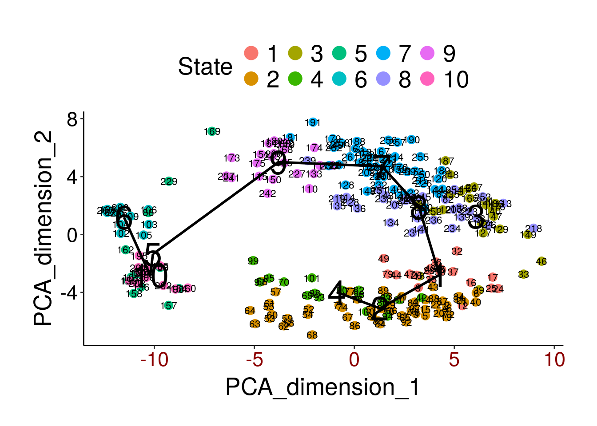
dengorderTSCAN <- TSCAN::TSCANorder(dengclust, orderonly = F)
pseudotime_order_tscan <- as.character(dengorderTSCAN$sample_name)We can also examine which timepoints have been assigned to each state:
cellLabels[dengclust$clusterid == 10]## [1] late2cell mid2cell mid2cell mid2cell mid2cell mid2cell mid2cell
## [8] mid2cell mid2cell mid2cell mid2cell mid2cell mid2cell
## 10 Levels: 16cell 4cell 8cell early2cell earlyblast ... zycolours <- rainbow(n = 10) # red = early, violet = late
tmp <-
factor(
cellLabels[as.numeric(pseudotime_order_tscan)],
levels = c("early2cell", "mid2cell", "late2cell", "4cell", "8cell",
"16cell", "earlyblast", "midblast", "lateblast")
)
plot(
as.numeric(tmp),
xlab = "Pseudotime Order",
ylab = "Timepoint",
col = colours[tmp],
pch = 16
)
Exercise 1 Compare results for different numbers of clusters (clusternum).
5.5.2 monocle
Monocle skips the clustering stage of TSCAN and directly builds a minimum spanning tree on a reduced dimension representation of the cells to connect all cells. Monocle then identifies the longest path in this tree to determine pseudotime. If the data contains diverging trajectories (i.e. one cell type differentiates into two different cell-types), monocle can identify these. Each of the resulting forked paths is defined as a separate cell state.
Unfortunately, Monocle does not work when all the genes are used, so we must carry out feature selection. First, we use M3Drop:
m3dGenes <- as.character(
M3Drop::M3DropFeatureSelection(deng)$Gene
)## Warning in bg__calc_variables(expr_mat): Warning: Removing 1134 invariant
## genes.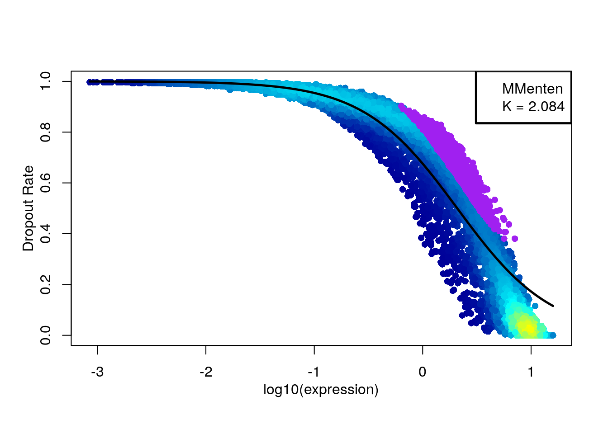
d <- deng[which(rownames(deng) %in% m3dGenes), ]
d <- d[!duplicated(rownames(d)), ]Now run monocle:
colnames(d) <- 1:ncol(d)
geneNames <- rownames(d)
rownames(d) <- 1:nrow(d)
pd <- data.frame(timepoint = cellLabels)
pd <- new("AnnotatedDataFrame", data=pd)
fd <- data.frame(gene_short_name = geneNames)
fd <- new("AnnotatedDataFrame", data=fd)
dCellData <- newCellDataSet(d, phenoData = pd, featureData = fd, expressionFamily = tobit())
dCellData <- setOrderingFilter(dCellData, which(geneNames %in% m3dGenes))
dCellData <- estimateSizeFactors(dCellData)
dCellDataSet <- reduceDimension(dCellData, pseudo_expr = 1)
dCellDataSet <- orderCells(dCellDataSet, reverse = FALSE)
plot_cell_trajectory(dCellDataSet)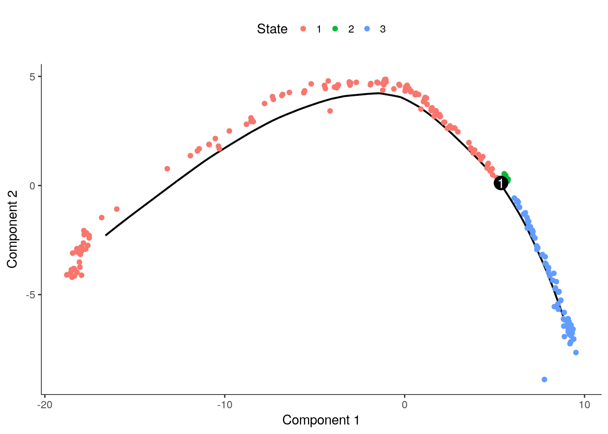
# Store the ordering
pseudotime_monocle <-
data.frame(
Timepoint = phenoData(dCellDataSet)$timepoint,
pseudotime = phenoData(dCellDataSet)$Pseudotime,
State=phenoData(dCellDataSet)$State
)
rownames(pseudotime_monocle) <- 1:ncol(d)
pseudotime_order_monocle <-
rownames(pseudotime_monocle[order(pseudotime_monocle$pseudotime), ])We can again compare the inferred pseudotime to the known sampling timepoints.
monocle_time_point <- factor(
pseudotime_monocle$Timepoint,
levels = c("early2cell", "mid2cell", "late2cell", "4cell", "8cell",
"16cell", "earlyblast", "midblast", "lateblast")
)
plot(
pseudotime_monocle$pseudotime,
monocle_time_point,
xlab = "Pseudotime",
ylab = "Timepoint",
col = colours[monocle_time_point],
pch = 16
)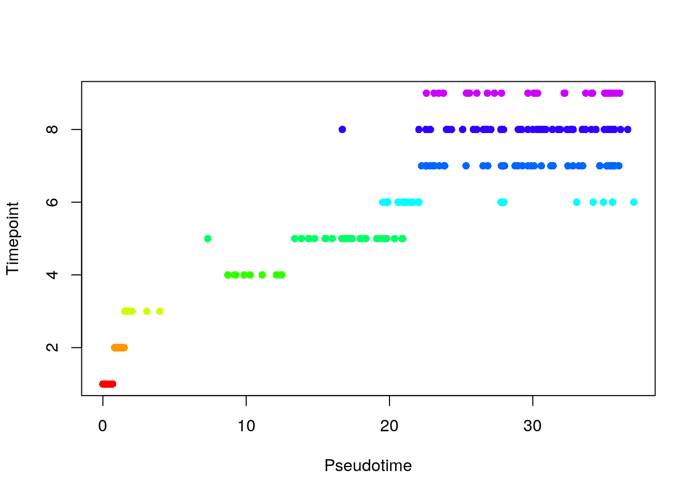
5.5.3 Diffusion maps
Diffusion maps were introduced by Ronald Coifman and Stephane Lafon, and the underlying idea is to assume that the data are samples from a diffusion process. The method infers the low-dimensional manifold by estimating the eigenvalues and eigenvectors for the diffusion operator related to the data.
Haghverdi et al have applied the diffusion maps concept to the analysis of single-cell RNA-seq data to create an R package called destiny.
dm <- DiffusionMap(t(log2(deng + 1)))
tmp <- factor(
colnames(deng),
levels = c(
"early2cell",
"mid2cell",
"late2cell",
"4cell",
"8cell",
"16cell",
"earlyblast",
"midblast",
"lateblast"
)
)
plot(
eigenvectors(dm)[,1],
eigenvectors(dm)[,2],
xlab = "Diffusion component 1",
ylab = "Diffusion component 2",
col = colours[tmp],
pch = 16
)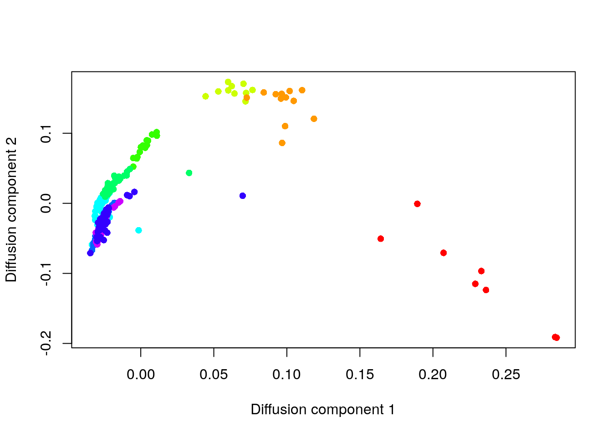
Like the other methods, destiny does a good job at ordering the early time-points, but it is unable to distinguish the later ones.
Exercise 2 Do you get a better resolution between the later time points by considering additional eigenvectors?
Exercise 3 How does the ordering change if you only use the genes identified by M3Drop?
5.5.4 SLICER
The SLICER method is an algorithm for constructing trajectories that describe gene expression changes during a sequential biological process, just as Monocle and TSCAN are. SLICER is designed to capture highly nonlinear gene expression changes, automatically select genes related to the process, and detect multiple branch and loop features in the trajectory (Welch, Hartemink, and Prins 2016). The SLICER R package is available from its GitHub repository and can be installed from there using the devtools package.
We use the select_genes function in SLICER to automatically select the genes to use in builing the cell trajectory. The function uses “neighbourhood variance” to identify genes that vary smoothly, rather than fluctuating randomly, across the set of cells. Following this, we determine which value of “k” (number of nearest neighbours) yields an embedding that most resembles a trajectory. Then we estimate the locally linear embedding of the cells.
require("lle")
slicer_genes <- select_genes(t(deng))
k <- select_k(t(deng[slicer_genes,]), kmin = 30, kmax=60)## finding neighbours
## calculating weights
## computing coordinates
## finding neighbours
## calculating weights
## computing coordinates
## finding neighbours
## calculating weights
## computing coordinates
## finding neighbours
## calculating weights
## computing coordinates
## finding neighbours
## calculating weights
## computing coordinates
## finding neighbours
## calculating weights
## computing coordinates
## finding neighbours
## calculating weights
## computing coordinatesslicer_traj_lle <- lle(t(deng[slicer_genes,]), m = 2, k)$Y## finding neighbours
## calculating weights
## computing coordinatesplot(slicer_traj_lle, xlab = "LLE Comp 1", ylab = "LLE Comp 2",
main = "Locally linear embedding of cells from SLICER",
col=colours[tmp], pch=16)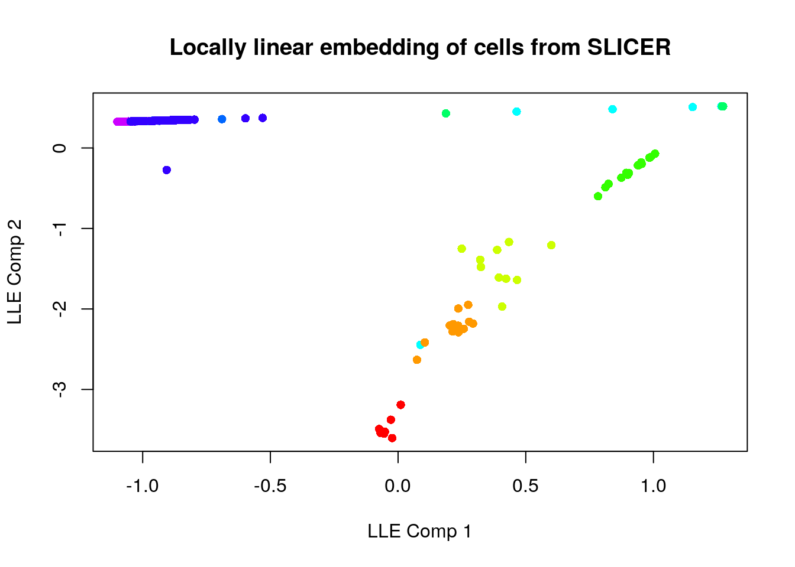
With the locally linear embedding computed we can construct a k-nearest neighbour graph that is fully connected. This plot displays a (yellow) circle for each cell, with the cell ID number overlaid in blue. Here we show the graph computed using 10 nearest neighbours. Here, SLICER appears to detect one major trajectory with one branch.
slicer_traj_graph <- conn_knn_graph(slicer_traj_lle, 10)
plot(slicer_traj_graph, main = "Fully connected kNN graph from SLICER")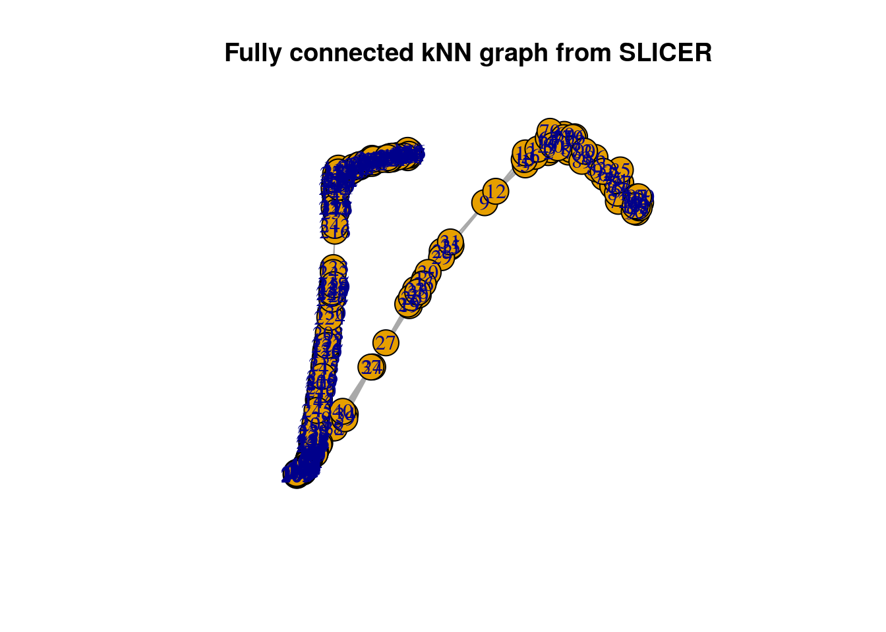
From this graph we can identify “extreme” cells that are candidates for start/end cells in the trajectory.
ends <- find_extreme_cells(slicer_traj_graph, slicer_traj_lle)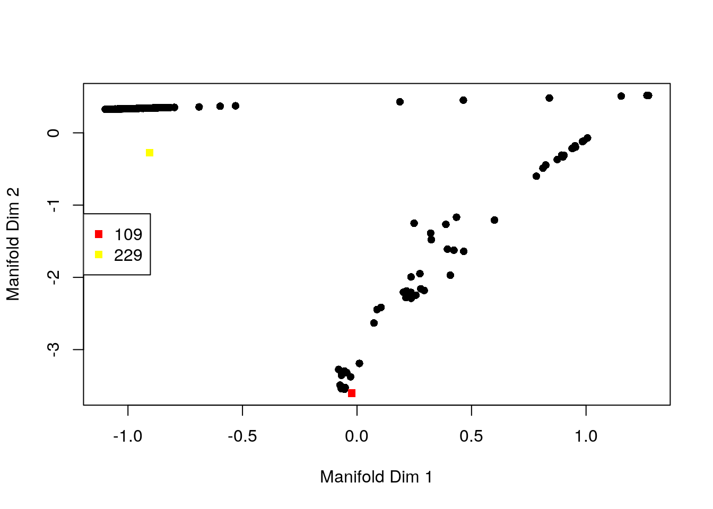
start <- ends[1]Having defined a start cell we can order the cells in the estimated pseudotime.
pseudotime_order_slicer <- cell_order(slicer_traj_graph, start)
branches <- assign_branches(slicer_traj_graph, start)
pseudotime_slicer <-
data.frame(
Timepoint = cellLabels,
pseudotime = NA,
State = branches
)
pseudotime_slicer$pseudotime[pseudotime_order_slicer] <-
1:length(pseudotime_order_slicer)We can again compare the inferred pseudotime to the known sampling timepoints. SLICER does not provide a pseudotime value per se, just an ordering of cells.
slicer_time_point <- factor(
pseudotime_slicer$Timepoint,
levels = c("early2cell", "mid2cell", "late2cell", "4cell", "8cell",
"16cell", "earlyblast", "midblast", "lateblast")
)
plot(
pseudotime_slicer$pseudotime,
slicer_time_point,
xlab = "Pseudotime",
ylab = "Timepoint",
col = colours[slicer_time_point],
pch = 16
)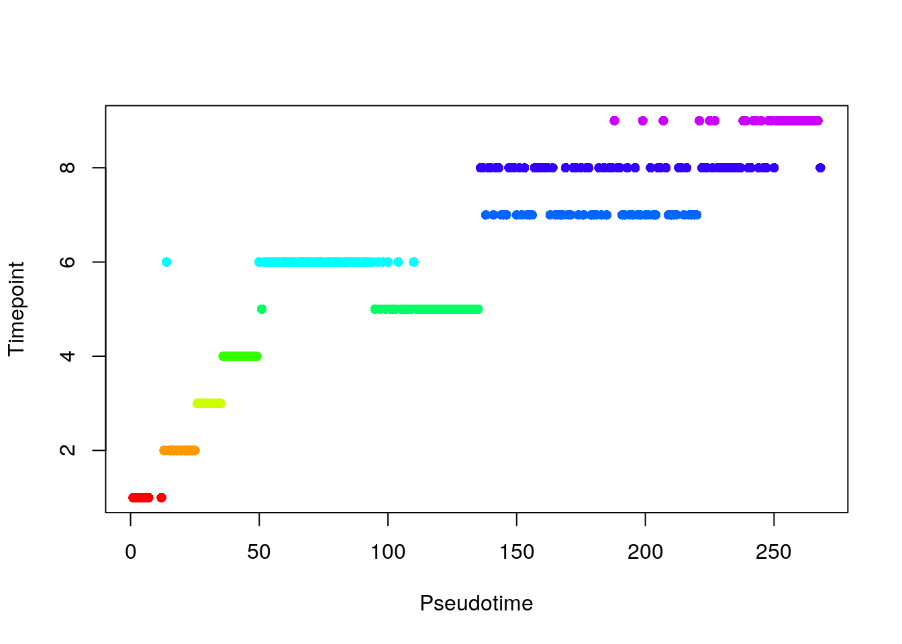
Like the previous method, SLICER here provides a good ordering for the early time points and struggles for later time points.
Exercise 4 How do the results change for different k? (e.g. k = 5) What about changing the number of nearest neighbours in the call to conn_knn_graph?
Exercise 5 How does the ordering change if you use a different set of genes from those chosen by SLICER (e.g. the genes identified by M3Drop)?
5.5.5 Comparison of the methods
How do the trajectories inferred by TSCAN and Monocle compare?
matched_ordering <-
match(
pseudotime_order_tscan,
pseudotime_order_monocle
)
timepoint_ordered <-
monocle_time_point[order(pseudotime_monocle$pseudotime)]
plot(
matched_ordering,
xlab = "Monocle Order",
ylab = "TSCAN Order",
col = colours[timepoint_ordered],
pch = 16
)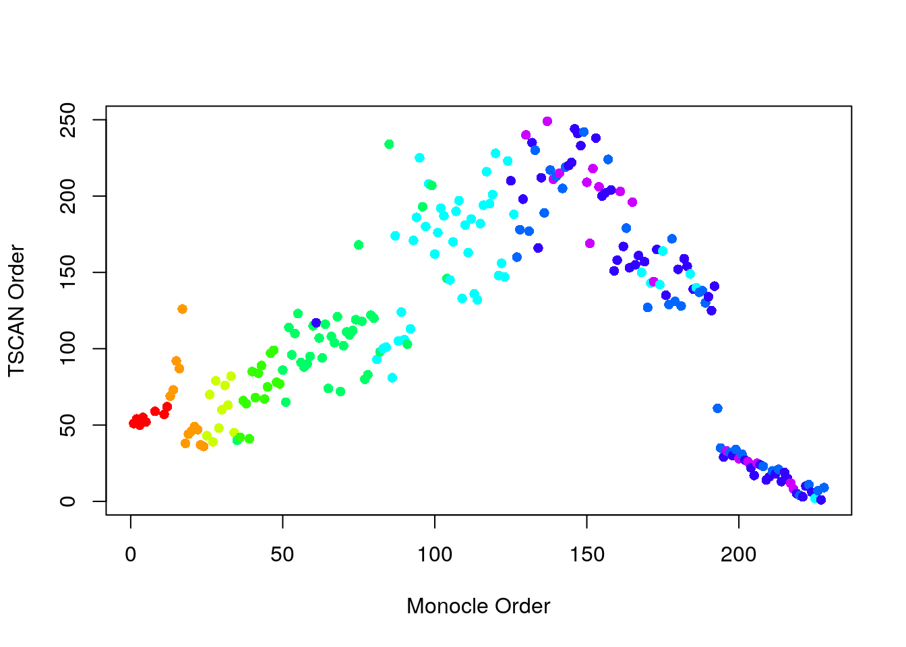
Exercise 6: Compare destiny and SLICER to TSCAN and Monocle.
5.5.6 Expression of genes through time
Each package also enables the visualization of expression through pseudotime. Following individual genes is very helpful for identifying genes that play an important role in the differentiation process. We illustrate the procedure using the Obox6 gene which is known to be important during early development.
TSCAN
colnames(deng) <- 1:ncol(deng)
TSCAN::singlegeneplot(
deng[rownames(deng) == "Obox6", ],
dengorderTSCAN
)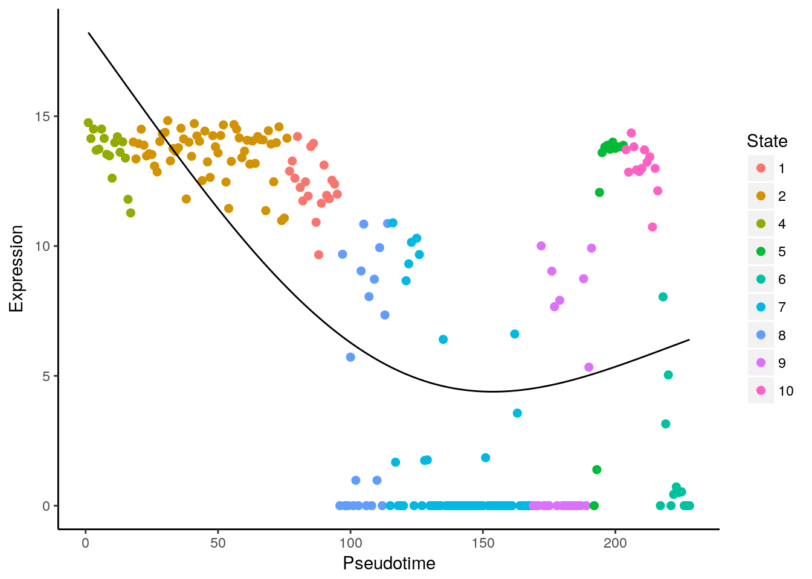
Monocle
monocle::plot_genes_in_pseudotime(
dCellDataSet[fData(dCellDataSet)$gene == "Obox6",],
color_by = "timepoint"
)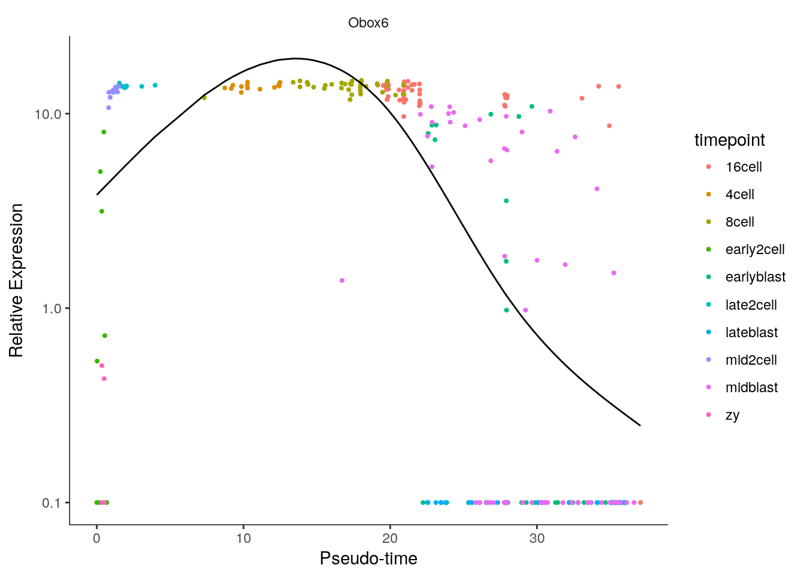
Of course, pseudotime values computed with any method can be added to the pData slot of an SCESet object. Having done that, the full plotting capabilities of the scater package can be used to investigate relationships between gene expression, cell populations and pseudotime. This would be particularly useful for the SLICER results, as SLICER does not provide plotting functions.
Exercise 7: Repeat the exercise using a subset of the genes, e.g. the set of highly variable genes that can be obtained using M3Drop::Brennecke_getVariableGenes
5.5.7 sessionInfo()
## R version 3.4.2 (2017-09-28)
## Platform: x86_64-pc-linux-gnu (64-bit)
## Running under: Debian GNU/Linux buster/sid
##
## Matrix products: default
## BLAS: /usr/lib/x86_64-linux-gnu/blas/libblas.so.3.7.1
## LAPACK: /usr/lib/x86_64-linux-gnu/lapack/liblapack.so.3.7.1
##
## locale:
## [1] LC_CTYPE=en_US.UTF-8 LC_NUMERIC=C
## [3] LC_TIME=en_US.UTF-8 LC_COLLATE=en_US.UTF-8
## [5] LC_MONETARY=en_US.UTF-8 LC_MESSAGES=en_US.UTF-8
## [7] LC_PAPER=en_US.UTF-8 LC_NAME=C
## [9] LC_ADDRESS=C LC_TELEPHONE=C
## [11] LC_MEASUREMENT=en_US.UTF-8 LC_IDENTIFICATION=C
##
## attached base packages:
## [1] splines parallel stats4 methods stats graphics grDevices
## [8] utils datasets base
##
## other attached packages:
## [1] lle_1.1 snowfall_1.84-6.1
## [3] snow_0.4-2 MASS_7.3-47
## [5] scatterplot3d_0.3-40 SLICER_0.2.0
## [7] destiny_2.4.5 monocle_2.4.0
## [9] DDRTree_0.1.5 irlba_2.3.1
## [11] VGAM_1.0-4 ggplot2_2.2.1
## [13] Matrix_1.2-11 M3Drop_2.02.00
## [15] numDeriv_2016.8-1 TSCAN_1.14.0
## [17] SingleCellExperiment_0.99.4 SummarizedExperiment_1.6.5
## [19] DelayedArray_0.2.7 matrixStats_0.52.2
## [21] Biobase_2.36.2 GenomicRanges_1.28.6
## [23] GenomeInfoDb_1.12.3 IRanges_2.10.5
## [25] S4Vectors_0.14.7 BiocGenerics_0.22.1
## [27] knitr_1.17
##
## loaded via a namespace (and not attached):
## [1] backports_1.1.1 Hmisc_4.0-3
## [3] RcppEigen_0.3.3.3.0 plyr_1.8.4
## [5] igraph_1.1.2 lazyeval_0.2.0
## [7] sp_1.2-5 densityClust_0.3
## [9] fastICA_1.2-1 digest_0.6.12
## [11] htmltools_0.3.6 gdata_2.18.0
## [13] magrittr_1.5 checkmate_1.8.5
## [15] tensor_1.5 cluster_2.0.6
## [17] limma_3.32.10 tripack_1.3-8
## [19] R.utils_2.5.0 xts_0.10-0
## [21] colorspace_1.3-2 ggrepel_0.7.0
## [23] dplyr_0.7.4 RCurl_1.95-4.8
## [25] lme4_1.1-14 spatstat_1.53-2
## [27] spatstat.data_1.1-1 bindr_0.1
## [29] survival_2.41-3 zoo_1.8-0
## [31] glue_1.1.1 polyclip_1.6-1
## [33] gtable_0.2.0 zlibbioc_1.22.0
## [35] XVector_0.16.0 MatrixModels_0.4-1
## [37] car_2.1-5 DEoptimR_1.0-8
## [39] abind_1.4-5 SparseM_1.77
## [41] VIM_4.7.0 scales_0.5.0
## [43] sgeostat_1.0-27 pheatmap_1.0.8
## [45] Rcpp_0.12.13 xtable_1.8-2
## [47] laeken_0.4.6 htmlTable_1.9
## [49] foreign_0.8-69 proxy_0.4-17
## [51] mclust_5.3 Formula_1.2-2
## [53] vcd_1.4-3 htmlwidgets_0.9
## [55] FNN_1.1 gplots_3.0.1
## [57] RColorBrewer_1.1-2 acepack_1.4.1
## [59] pkgconfig_2.0.1 R.methodsS3_1.7.1
## [61] deldir_0.1-14 nnet_7.3-12
## [63] alphahull_2.1 labeling_0.3
## [65] rlang_0.1.2 reshape2_1.4.2
## [67] munsell_0.4.3 tools_3.4.2
## [69] splancs_2.01-40 evaluate_0.10.1
## [71] stringr_1.2.0 yaml_2.1.14
## [73] goftest_1.1-1 robustbase_0.92-7
## [75] caTools_1.17.1 bindrcpp_0.2
## [77] nlme_3.1-131 mime_0.5
## [79] quantreg_5.34 slam_0.1-40
## [81] R.oo_1.21.0 compiler_3.4.2
## [83] pbkrtest_0.4-7 curl_3.0
## [85] e1071_1.6-8 spatstat.utils_1.7-1
## [87] smoother_1.1 tibble_1.3.4
## [89] statmod_1.4.30 stringi_1.1.5
## [91] highr_0.6 lattice_0.20-35
## [93] nloptr_1.0.4 HSMMSingleCell_0.110.0
## [95] combinat_0.0-8 lmtest_0.9-35
## [97] data.table_1.10.4-2 bitops_1.0-6
## [99] httpuv_1.3.5 R6_2.2.2
## [101] latticeExtra_0.6-28 bookdown_0.5
## [103] KernSmooth_2.23-15 gridExtra_2.3
## [105] boot_1.3-20 gtools_3.5.0
## [107] assertthat_0.2.0 rprojroot_1.2
## [109] qlcMatrix_0.9.5 GenomeInfoDbData_0.99.0
## [111] mgcv_1.8-22 grid_3.4.2
## [113] rpart_4.1-11 class_7.3-14
## [115] minqa_1.2.4 rmarkdown_1.6
## [117] Rtsne_0.13 TTR_0.23-2
## [119] bbmle_1.0.19 shiny_1.0.5
## [121] base64enc_0.1-35.6 Imputation
library(scImpute)
library(SC3)
library(scater)
library(SingleCellExperiment)
set.seed(1234567)As discussed previously, one of the main challenges when analyzing scRNA-seq data is the presence of zeros, or dropouts. The dropouts are assumed to have arisen for three possible reasons:
- The gene was not expressed in the cell and hence there are no transcripts to sequence
- The gene was expressed, but for some reason the transcripts were lost somewhere prior to sequencing
- The gene was expressed and transcripts were captured and turned into cDNA, but the sequencing depth was not sufficient to produce any reads.
Thus, dropouts could be result of experimental shortcomings, and if this is the case then we would like to provide computational corrections. One possible solution is to impute the dropouts in the expression matrix. To be able to impute gene expression values, one must have an underlying model. However, since we do not know which dropout events are technical artefacts and which correspond to the transcript being truly absent, imputation is a difficult challenges.
To the best of our knowledge, there are currently two different imputation methods available: MAGIC (Dijk et al. 2017) and scImpute (W. V. Li and Li 2017). Since MAGIC is only available for Python or Matlab, we will only cover scImpute in this chapter.
5.6.1 scImpute
To test scImpute, we use the default parameters and we apply it to the Deng dataset that we have worked with before. scImpute takes a .csv or .txt file as an input:
## [1] "reading in raw count matrix ..."
## [1] "number of genes in raw count matrix 22431"
## [1] "number of cells in raw count matrix 268"
## [1] "estimating mixture models ..."
## [1] "imputing dropout values ..."
## [1] "inferring cell similarities ..."
## [1] "cluster sizes:"
## [1] 12 9 26 5 9 57 58 43 17 22
## [1] "estimating dropout probability for type 1 ..."
## [1] "imputing dropout values for type 1 ..."
## [1] "estimating dropout probability for type 2 ..."
## [1] "imputing dropout values for type 2 ..."
## [1] "estimating dropout probability for type 3 ..."
## [1] "imputing dropout values for type 3 ..."
## [1] "estimating dropout probability for type 4 ..."
## [1] "imputing dropout values for type 4 ..."
## [1] "estimating dropout probability for type 5 ..."
## [1] "imputing dropout values for type 5 ..."
## [1] "estimating dropout probability for type 6 ..."
## [1] "imputing dropout values for type 6 ..."
## [1] "estimating dropout probability for type 7 ..."
## [1] "imputing dropout values for type 7 ..."
## [1] "estimating dropout probability for type 8 ..."
## [1] "imputing dropout values for type 8 ..."
## [1] "estimating dropout probability for type 9 ..."
## [1] "imputing dropout values for type 9 ..."
## [1] "estimating dropout probability for type 10 ..."
## [1] "imputing dropout values for type 10 ..."
## [1] "writing imputed count matrix ..."## [1] 17 18 88 111 126 177 186 229 244 247Now we can compare the results with original data by considering a PCA plot
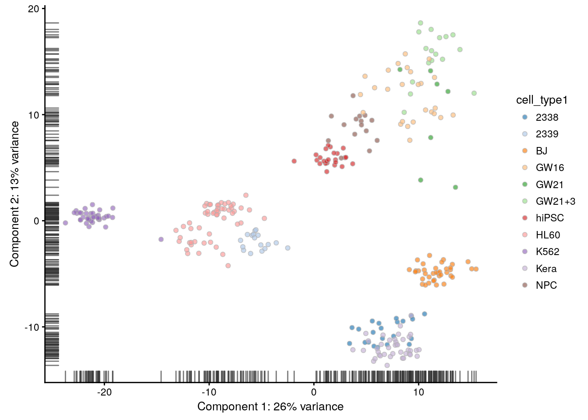
Compare this result to the original data in Fig. X, Chapter Y. What are the most significant differences?
To evaluate the impact of the imputation, we use SC3 to cluster the imputed matrix
## Estimating k...## [1] 6## Setting SC3 parameters...## Setting a range of k...## Calculating distances between the cells...## Performing transformations and calculating eigenvectors...## Performing k-means clustering...## Calculating consensus matrix...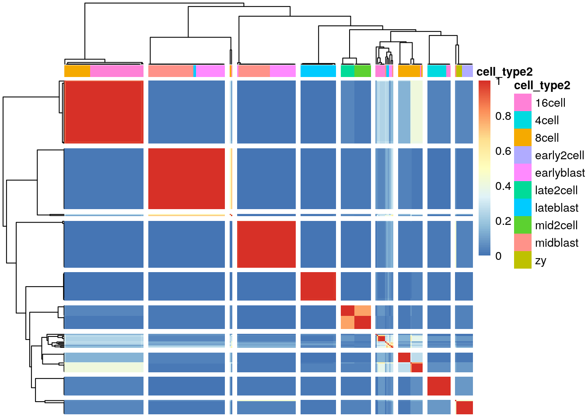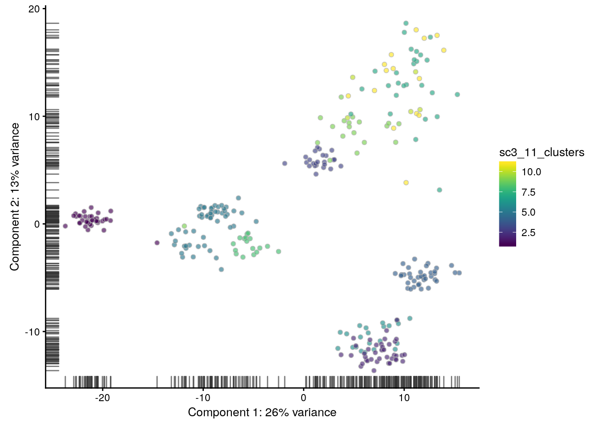
Based on the PCA and the clustering results, do you think that imputation is a good idea for the Pollen dataset?
5.6.2 MAGIC
Compare this result to the original data in Fig. X, Chapter Y. What are the most significant differences?
To evaluate the impact of the imputation, we use SC3 to cluster the imputed matrix
5.6.3 sessionInfo()
## R version 3.4.2 (2017-09-28)
## Platform: x86_64-pc-linux-gnu (64-bit)
## Running under: Debian GNU/Linux buster/sid
##
## Matrix products: default
## BLAS: /usr/lib/x86_64-linux-gnu/blas/libblas.so.3.7.1
## LAPACK: /usr/lib/x86_64-linux-gnu/lapack/liblapack.so.3.7.1
##
## locale:
## [1] LC_CTYPE=en_US.UTF-8 LC_NUMERIC=C
## [3] LC_TIME=en_US.UTF-8 LC_COLLATE=en_US.UTF-8
## [5] LC_MONETARY=en_US.UTF-8 LC_MESSAGES=en_US.UTF-8
## [7] LC_PAPER=en_US.UTF-8 LC_NAME=C
## [9] LC_ADDRESS=C LC_TELEPHONE=C
## [11] LC_MEASUREMENT=en_US.UTF-8 LC_IDENTIFICATION=C
##
## attached base packages:
## [1] stats4 methods parallel stats graphics grDevices utils
## [8] datasets base
##
## other attached packages:
## [1] scater_1.5.21 ggplot2_2.2.1
## [3] SC3_1.5.6 SingleCellExperiment_0.99.4
## [5] SummarizedExperiment_1.6.5 DelayedArray_0.2.7
## [7] matrixStats_0.52.2 Biobase_2.36.2
## [9] GenomicRanges_1.28.6 GenomeInfoDb_1.12.3
## [11] IRanges_2.10.5 S4Vectors_0.14.7
## [13] BiocGenerics_0.22.1 scImpute_0.0.3
## [15] penalized_0.9-50 survival_2.41-3
## [17] kernlab_0.9-25 knitr_1.17
##
## loaded via a namespace (and not attached):
## [1] bitops_1.0-6 bit64_0.9-7
## [3] doParallel_1.0.11 RColorBrewer_1.1-2
## [5] rprojroot_1.2 tools_3.4.2
## [7] backports_1.1.1 doRNG_1.6.6
## [9] R6_2.2.2 vipor_0.4.5
## [11] KernSmooth_2.23-15 DBI_0.7
## [13] lazyeval_0.2.0 colorspace_1.3-2
## [15] gridExtra_2.3 bit_1.1-12
## [17] compiler_3.4.2 pkgmaker_0.22
## [19] labeling_0.3 bookdown_0.5
## [21] caTools_1.17.1 scales_0.5.0
## [23] DEoptimR_1.0-8 mvtnorm_1.0-6
## [25] robustbase_0.92-7 stringr_1.2.0
## [27] digest_0.6.12 rmarkdown_1.6
## [29] XVector_0.16.0 pkgconfig_2.0.1
## [31] rrcov_1.4-3 htmltools_0.3.6
## [33] WriteXLS_4.0.0 limma_3.32.10
## [35] rlang_0.1.2 RSQLite_2.0
## [37] shiny_1.0.5 bindr_0.1
## [39] gtools_3.5.0 dplyr_0.7.4
## [41] RCurl_1.95-4.8 magrittr_1.5
## [43] GenomeInfoDbData_0.99.0 Matrix_1.2-11
## [45] ggbeeswarm_0.6.0 Rcpp_0.12.13
## [47] munsell_0.4.3 viridis_0.4.0
## [49] edgeR_3.18.1 stringi_1.1.5
## [51] yaml_2.1.14 zlibbioc_1.22.0
## [53] rhdf5_2.20.0 gplots_3.0.1
## [55] plyr_1.8.4 grid_3.4.2
## [57] blob_1.1.0 gdata_2.18.0
## [59] shinydashboard_0.6.1 lattice_0.20-35
## [61] cowplot_0.8.0 splines_3.4.2
## [63] locfit_1.5-9.1 rjson_0.2.15
## [65] rngtools_1.2.4 reshape2_1.4.2
## [67] codetools_0.2-15 biomaRt_2.32.1
## [69] glue_1.1.1 XML_3.98-1.9
## [71] evaluate_0.10.1 data.table_1.10.4-2
## [73] httpuv_1.3.5 foreach_1.4.3
## [75] gtable_0.2.0 assertthat_0.2.0
## [77] mime_0.5 xtable_1.8-2
## [79] e1071_1.6-8 class_7.3-14
## [81] pcaPP_1.9-72 viridisLite_0.2.0
## [83] tibble_1.3.4 pheatmap_1.0.8
## [85] iterators_1.0.8 beeswarm_0.2.3
## [87] AnnotationDbi_1.38.2 registry_0.3
## [89] memoise_1.1.0 tximport_1.4.0
## [91] bindrcpp_0.2 cluster_2.0.6
## [93] ROCR_1.0-75.7 Differential Expression (DE) analysis
5.7.1 Bulk RNA-seq
One of the most common types of analyses when analyzing bulk RNA-seq data is to identify differentially expressed genes. By comparing the genes that change between two conditions, e.g. mutant and wild-type or stimulated and unstimulated, it is possible to characterize the molecular mechanisms underlying the change.
Several different methods, e.g. DESeq2 and edgeR, have been developed for bulk RNA-seq. Moreover, there are also extensive datasets available where the RNA-seq data has been validated using RT-qPCR. These data can be used to benchmark DE finding algorithms.
5.7.2 Single cell RNA-seq
In contrast to bulk RNA-seq, in scRNA-seq we usually do not have a defined set of experimental conditions. Instead, as was shown in a previous chapter (5.2) we can identify the cell groups by using an unsupervised clustering approach. Once the groups have been identified one can find differentially expressed genes either by comparing the differences in variance between the groups (like the Kruskal-Wallis test implemented in SC3), or by comparing gene expression between clusters in a pairwise manner. In the following chapter we will mainly consider tools developed for pairwise comparisons.
5.7.3 Differences in Distribution
Unlike bulk RNA-seq, we generally have a large number of samples (i.e. cells) for each group we are comparing in single-cell experiments. Thus we can take advantage of the whole distribution of expression values in each group to identify differences between groups rather than only comparing estimates of mean-expression as is standard for bulk RNASeq.
There are two main approaches to comparing distributions. Firstly, we can use existing statistical models/distributions and fit the same type of model to the expression in each group then test for differences in the parameters for each model, or test whether the model fits better if a particular paramter is allowed to be different according to group. For instance in Chapter 4.17 we used edgeR to test whether allowing mean expression to be different in different batches significantly improved the fit of a negative binomial model of the data.
Alternatively, we can use a non-parametric test which does not assume expression values follow any particular distribution, e.g. the Kolmogorov-Smirnov test (KS-test). Non-parametric tests generally convert observed expression values to ranks and test whether the distribution of ranks for one group are signficantly different from the distribution of ranks for the other group. However, some non-parametric methods fail in the presence of a large number of tied values, such as the case for dropouts (zeros) in single-cell RNA-seq expression data. Moreover, if the conditions for a parametric test hold, then it will typically be more powerful than a non-parametric test.
5.7.4 Models of single-cell RNASeq data
The most common model of RNASeq data is the negative binomial model:
set.seed(1)
hist(rnbinom(1000, mu=10, size=100), col="grey50", xlab="Read Counts", main="Negative Binomial")
Figure 5.12: Negative Binomial distribution of read counts for a single gene across 1000 cells
Mean: \(\mu = mu\)
Variance: \(\sigma^2 = mu + mu^2/size\)
It is parameterized by the mean expression (mu) and the dispersion (size), which is inversely related to the variance. The negative binomial model fits bulk RNA-seq data very well and it is used for most statistical methods designed for such data. In addition, it has been show to fit the distribution of molecule counts obtained from data tagged by unique molecular identifiers (UMIs) quite well (Grun et al. 2014, Islam et al. 2011).
However, a raw negative binomial model does not fit full-length transcript data as well due to the high dropout rates relative to the non-zero read counts. For this type of data a variety of zero-inflated negative binomial models have been proposed (e.g. MAST, SCDE).
d = 0.5;
counts <- rnbinom(1000, mu=10, size=100);
counts[runif(1000) < d] = 0;
hist(counts, col="grey50", xlab="Read Counts", main="Zero-inflated NB");
Figure 5.13: Zero-inflated Negative Binomial distribution
Mean: \(\mu = mu \cdot (1 - d)\)
Variance: \(\sigma^2 = \mu \cdot (1-d) \cdot (1 + d \cdot \mu + \mu / size)\)
These models introduce a new parameter \(d\), for the dropout rate, to the negative binomial model. As we saw in Chapter 19, the dropout rate of a gene is strongly correlated with the mean expression of the gene. Different zero-inflated negative binomial models use different relationships between mu and d and some may fit \(\mu\) and \(d\) to the expression of each gene independently.
Finally, several methods use a Poisson-Beta distribution which is based on a mechanistic model of transcriptional bursting. There is strong experimental support for this model (Kim and Marioni, 2013) and it provides a good fit to scRNA-seq data but it is less easy to use than the negative-binomial models and much less existing methods upon which to build than the negative binomial model.
a = 0.1
b = 0.1
g = 100
lambdas = rbeta(1000, a, b)
counts = sapply(g*lambdas, function(l) {rpois(1, lambda=l)})
hist(counts, col="grey50", xlab="Read Counts", main="Poisson-Beta") Mean: \(\mu = g \cdot a / (a + b)\)
Mean: \(\mu = g \cdot a / (a + b)\)
Variance: \(\sigma^2 = g^2 \cdot a \cdot b/((a + b + 1) \cdot (a + b)^2)\)
This model uses three parameters: \(a\) the rate of activation of transcription; \(b\) the rate of inhibition of transcription; and \(g\) the rate of transcript production while transcription is active at the locus. Differential expression methods may test each of the parameters for differences across groups or only one (often \(g\)).
All of these models may be further expanded to explicitly account for other sources of gene expression differences such as batch-effect or library depth depending on the particular DE algorithm.
Exercise: Vary the parameters of each distribution to explore how they affect the distribution of gene expression. How similar are the Poisson-Beta and Negative Binomial models?
5.8 DE in a real dataset
library(scRNA.seq.funcs)
library(edgeR)
library(monocle)
library(MAST)
library(ROCR)
set.seed(1)5.8.1 Introduction
To test different single-cell differential expression methods we will be using the Blischak dataset from Chapters 7-17. For this experiment bulk RNA-seq data for each cell-line was generated in addition to single-cell data. We will use the differentially expressed genes identified using standard methods on the respective bulk data as the ground truth for evaluating the accuracy of each single-cell method. To save time we have pre-computed these for you, run the commands below to load these data.
DE <- read.table("tung/TPs.txt")
notDE <- read.table("tung/TNs.txt")
GroundTruth <- list(DE=as.character(unlist(DE)), notDE=as.character(unlist(notDE)))This ground truth has been produce for the comparison of individual NA19101 to NA19239. Now load the respective single-cell data:
molecules <- read.table("tung/molecules.txt", sep = "\t")
anno <- read.table("tung/annotation.txt", sep = "\t", header = TRUE)
keep <- anno[,1] == "NA19101" | anno[,1] == "NA19239"
data <- molecules[,keep]
group <- anno[keep,1]
batch <- anno[keep,4]
# remove genes that aren't expressed in at least 6 cells
gkeep <- rowSums(data > 0) > 5;
counts <- data[gkeep,]
# Library size normalization
lib_size = colSums(counts)
norm <- t(t(counts)/lib_size*median(lib_size))
# Variant of CPM for datasets with library sizes of fewer than 1 mil moleculesNow we will compare various single-cell DE methods. Note that we will only be running methods which are available as R-packages and run relatively quickly.
5.8.2 Kolmogorov-Smirnov test
The types of test that are easiest to work with are non-parametric ones. The most commonly used non-parametric test is the Kolmogorov-Smirnov test (KS-test) and we can use it to compare the distributions for each gene in the two individuals.
The KS-test quantifies the distance between the empirical cummulative distributions of the expression of each gene in each of the two populations. It is sensitive to changes in mean experession and changes in variability. However it assumes data is continuous and may perform poorly when data contains a large number of identical values (eg. zeros). Another issue with the KS-test is that it can be very sensitive for large sample sizes and thus it may end up as significant even though the magnitude of the difference is very small.
)](figures/KS2_Example.png)
Figure 5.14: Illustration of the two-sample Kolmogorov–Smirnov statistic. Red and blue lines each correspond to an empirical distribution function, and the black arrow is the two-sample KS statistic. (taken from here)
Now run the test:
pVals <- apply(norm, 1, function(x) {
ks.test(x[group =="NA19101"],
x[group=="NA19239"])$p.value
})
# multiple testing correction
pVals <- p.adjust(pVals, method = "fdr")This code “applies” the function to each row (specified by 1) of the expression matrix, data. In the function we are returning just the p.value from the ks.test output. We can now consider how many of the ground truth positive and negative DE genes are detected by the KS-test:
5.8.2.1 Evaluating Accuracy
sigDE <- names(pVals)[pVals < 0.05]
length(sigDE) ## [1] 5095# Number of KS-DE genes
sum(GroundTruth$DE %in% sigDE) ## [1] 792# Number of KS-DE genes that are true DE genes
sum(GroundTruth$notDE %in% sigDE)## [1] 3190# Number of KS-DE genes that are truly not-DEAs you can see many more of our ground truth negative genes were identified as DE by the KS-test (false positives) than ground truth positive genes (true positives), however this may be due to the larger number of notDE genes thus we typically normalize these counts as the True positive rate (TPR), TP/(TP + FN), and False positive rate (FPR), FP/(FP+TP).
tp <- sum(GroundTruth$DE %in% sigDE)
fp <- sum(GroundTruth$notDE %in% sigDE)
tn <- sum(GroundTruth$notDE %in% names(pVals)[pVals >= 0.05])
fn <- sum(GroundTruth$DE %in% names(pVals)[pVals >= 0.05])
tpr <- tp/(tp + fn)
fpr <- fp/(fp + tn)
cat(c(tpr, fpr))## 0.7346939 0.2944706Now we can see the TPR is much higher than the FPR indicating the KS test is identifying DE genes.
So far we’ve only evaluated the performance at a single significance threshold. Often it is informative to vary the threshold and evaluate performance across a range of values. This is then plotted as a receiver-operating-characteristic curve (ROC) and a general accuracy statistic can be calculated as the area under this curve (AUC). We will use the ROCR package to facilitate this plotting.
# Only consider genes for which we know the ground truth
pVals <- pVals[names(pVals) %in% GroundTruth$DE |
names(pVals) %in% GroundTruth$notDE]
truth <- rep(1, times = length(pVals));
truth[names(pVals) %in% GroundTruth$DE] = 0;
pred <- ROCR::prediction(pVals, truth)
perf <- ROCR::performance(pred, "tpr", "fpr")
ROCR::plot(perf)
Figure 5.15: ROC curve for KS-test.
aucObj <- ROCR::performance(pred, "auc")
aucObj@y.values[[1]] # AUC## [1] 0.7954796Finally to facilitate the comparisons of other DE methods let’s put this code into a function so we don’t need to repeat it:
DE_Quality_AUC <- function(pVals) {
pVals <- pVals[names(pVals) %in% GroundTruth$DE |
names(pVals) %in% GroundTruth$notDE]
truth <- rep(1, times = length(pVals));
truth[names(pVals) %in% GroundTruth$DE] = 0;
pred <- ROCR::prediction(pVals, truth)
perf <- ROCR::performance(pred, "tpr", "fpr")
ROCR::plot(perf)
aucObj <- ROCR::performance(pred, "auc")
return(aucObj@y.values[[1]])
}5.8.3 Wilcox/Mann-Whitney-U Test
The Wilcox-rank-sum test is another non-parametric test, but tests specifically if values in one group are greater/less than the values in the other group. Thus it is often considered a test for difference in median expression between two groups; whereas the KS-test is sensitive to any change in distribution of expression values.
pVals <- apply(norm, 1, function(x) {
wilcox.test(x[group =="NA19101"],
x[group=="NA19239"])$p.value
})
# multiple testing correction
pVals <- p.adjust(pVals, method = "fdr")
DE_Quality_AUC(pVals)
Figure 5.16: ROC curve for Wilcox test.
## [1] 0.83203265.8.4 edgeR
We’ve already used edgeR for differential expression in Chapter 4.17. edgeR is based on a negative binomial model of gene expression and uses a generalized linear model (GLM) framework, the enables us to include other factors such as batch to the model.
dge <- DGEList(counts=counts, norm.factors = rep(1, length(counts[1,])), group=group)
group_edgeR <- factor(group)
design <- model.matrix(~group_edgeR)
dge <- estimateDisp(dge, design = design, trend.method="none")
fit <- glmFit(dge, design)
res <- glmLRT(fit)
pVals <- res$table[,4]
names(pVals) <- rownames(res$table)
pVals <- p.adjust(pVals, method = "fdr")
DE_Quality_AUC(pVals)
Figure 5.17: ROC curve for edgeR.
## [1] 0.84771895.8.5 Monocle
Monocle can use several different models for DE. For count data it recommends the Negative Binomial model (negbinomial.size). For normalized data it recommends log-transforming it then using a normal distribution (gaussianff). Similar to edgeR this method uses a GLM framework so in theory can account for batches, however in practice the model fails for this dataset if batches are included.
pd <- data.frame(group=group, batch=batch)
rownames(pd) <- colnames(counts)
pd <- new("AnnotatedDataFrame", data = pd)
Obj <- newCellDataSet(as.matrix(counts), phenoData=pd,
expressionFamily=negbinomial.size())
Obj <- estimateSizeFactors(Obj)
Obj <- estimateDispersions(Obj)
res <- differentialGeneTest(Obj,fullModelFormulaStr="~group")
pVals <- res[,3]
names(pVals) <- rownames(res)
pVals <- p.adjust(pVals, method = "fdr")
DE_Quality_AUC(pVals)
Figure 5.18: ROC curve for Monocle.
## [1] 0.8252662Exercise: Compare the results using the negative binomial model on counts and those from using the normal/gaussian model (gaussianff()) on log-transformed normalized counts.
Answer:
Figure 5.19: ROC curve for Monocle-gaussian.
## [1] 0.73578295.8.6 MAST
MAST is based on a zero-inflated negative binomial model. It tests for differential expression using a hurdle model to combine tests of discrete (0 vs not zero) and continuous (non-zero values) aspects of gene expression. Again this uses a linear modelling framework to enable complex models to be considered.
log_counts <- log(counts+1)/log(2)
fData = data.frame(names=rownames(log_counts))
rownames(fData) = rownames(log_counts);
cData = data.frame(cond=group)
rownames(cData) = colnames(log_counts)
obj <- FromMatrix(as.matrix(log_counts), cData, fData)
colData(obj)$cngeneson <- scale(colSums(assay(obj)>0))
cond <- factor(colData(obj)$cond)
# Model expression as function of condition & number of detected genes
zlmCond <- zlm.SingleCellAssay(~cond + cngeneson, obj) ## Warning: 'zlm.SingleCellAssay' is deprecated.
## Use 'zlm' instead.
## See help("Deprecated")## Warning in .nextMethod(object = object, value = value): Coefficients
## condNA19239 are never estimible and will be dropped.summaryCond <- summary(zlmCond, doLRT="condNA19101")
summaryDt <- summaryCond$datatable
summaryDt <- as.data.frame(summaryDt)
pVals <- unlist(summaryDt[summaryDt$component == "H",4]) # H = hurdle model
names(pVals) <- unlist(summaryDt[summaryDt$component == "H",1])
pVals <- p.adjust(pVals, method = "fdr")
DE_Quality_AUC(pVals)
Figure 5.20: ROC curve for MAST.
## [1] 0.82840465.8.7 Slow Methods (>1h to run)
These methods are too slow to run today but we encourage you to try them out on your own:
5.8.8 BPSC
BPSC uses the Poisson-Beta model of single-cell gene expression, which we discussed in the previous chapter, and combines it with generalized linear models which we’ve already encountered when using edgeR. BPSC performs comparisons of one or more groups to a reference group (“control”) and can include other factors such as batches in the model.
library(BPSC)
bpsc_data <- norm[,batch=="NA19101.r1" | batch=="NA19239.r1"]
bpsc_group = group[batch=="NA19101.r1" | batch=="NA19239.r1"]
control_cells <- which(bpsc_group == "NA19101")
design <- model.matrix(~bpsc_group)
coef=2 # group label
res=BPglm(data=bpsc_data, controlIds=control_cells, design=design, coef=coef,
estIntPar=FALSE, useParallel = FALSE)
pVals = res$PVAL
pVals <- p.adjust(pVals, method = "fdr")
DE_Quality_AUC(pVals)5.8.9 SCDE
SCDE is the first single-cell specific DE method. It fits a zero-inflated negative binomial model to expression data using Bayesian statistics. The usage below tests for differences in mean expression of individual genes across groups but recent versions include methods to test for differences in mean expression or dispersion of groups of genes, usually representing a pathway.
library(scde)
cnts <- apply(
counts,
2,
function(x) {
storage.mode(x) <- 'integer'
return(x)
}
)
names(group) <- 1:length(group)
colnames(cnts) <- 1:length(group)
o.ifm <- scde::scde.error.models(
counts = cnts,
groups = group,
n.cores = 1,
threshold.segmentation = TRUE,
save.crossfit.plots = FALSE,
save.model.plots = FALSE,
verbose = 0,
min.size.entries = 2
)
priors <- scde::scde.expression.prior(
models = o.ifm,
counts = cnts,
length.out = 400,
show.plot = FALSE
)
resSCDE <- scde::scde.expression.difference(
o.ifm,
cnts,
priors,
groups = group,
n.randomizations = 100,
n.cores = 1,
verbose = 0
)
# Convert Z-scores into 2-tailed p-values
pVals <- pnorm(abs(resSCDE$cZ), lower.tail = FALSE) * 2
pVals <- p.adjust(pVals, method = "fdr")
DE_Quality_AUC(pVals)5.8.10 sessionInfo()
## R version 3.4.2 (2017-09-28)
## Platform: x86_64-pc-linux-gnu (64-bit)
## Running under: Debian GNU/Linux buster/sid
##
## Matrix products: default
## BLAS: /usr/lib/x86_64-linux-gnu/blas/libblas.so.3.7.1
## LAPACK: /usr/lib/x86_64-linux-gnu/lapack/liblapack.so.3.7.1
##
## locale:
## [1] LC_CTYPE=en_US.UTF-8 LC_NUMERIC=C
## [3] LC_TIME=en_US.UTF-8 LC_COLLATE=en_US.UTF-8
## [5] LC_MONETARY=en_US.UTF-8 LC_MESSAGES=en_US.UTF-8
## [7] LC_PAPER=en_US.UTF-8 LC_NAME=C
## [9] LC_ADDRESS=C LC_TELEPHONE=C
## [11] LC_MEASUREMENT=en_US.UTF-8 LC_IDENTIFICATION=C
##
## attached base packages:
## [1] splines stats4 parallel methods stats graphics grDevices
## [8] utils datasets base
##
## other attached packages:
## [1] ROCR_1.0-7 gplots_3.0.1
## [3] MAST_1.2.1 SummarizedExperiment_1.6.5
## [5] DelayedArray_0.2.7 matrixStats_0.52.2
## [7] GenomicRanges_1.28.6 GenomeInfoDb_1.12.3
## [9] IRanges_2.10.5 S4Vectors_0.14.7
## [11] monocle_2.4.0 DDRTree_0.1.5
## [13] irlba_2.3.1 VGAM_1.0-4
## [15] ggplot2_2.2.1 Biobase_2.36.2
## [17] BiocGenerics_0.22.1 Matrix_1.2-11
## [19] edgeR_3.18.1 limma_3.32.10
## [21] scRNA.seq.funcs_0.1.0 knitr_1.17
##
## loaded via a namespace (and not attached):
## [1] gtools_3.5.0 elliptic_1.3-7
## [3] moments_0.14 assertthat_0.2.0
## [5] statmod_1.4.30 highr_0.6
## [7] GenomeInfoDbData_0.99.0 yaml_2.1.14
## [9] slam_0.1-40 ggrepel_0.7.0
## [11] backports_1.1.1 lattice_0.20-35
## [13] glue_1.1.1 densityClust_0.3
## [15] digest_0.6.12 RColorBrewer_1.1-2
## [17] XVector_0.16.0 colorspace_1.3-2
## [19] fastICA_1.2-1 htmltools_0.3.6
## [21] plyr_1.8.4 pkgconfig_2.0.1
## [23] pheatmap_1.0.8 HSMMSingleCell_0.110.0
## [25] qlcMatrix_0.9.5 zlibbioc_1.22.0
## [27] bookdown_0.5 scales_0.5.0
## [29] gdata_2.18.0 Rtsne_0.13
## [31] tibble_1.3.4 combinat_0.0-8
## [33] lazyeval_0.2.0 magrittr_1.5
## [35] evaluate_0.10.1 MASS_7.3-47
## [37] FNN_1.1 data.table_1.10.4-2
## [39] tools_3.4.2 stringr_1.2.0
## [41] munsell_0.4.3 locfit_1.5-9.1
## [43] cluster_2.0.6 bindrcpp_0.2
## [45] orthopolynom_1.0-5 compiler_3.4.2
## [47] caTools_1.17.1 contfrac_1.1-11
## [49] rlang_0.1.2 grid_3.4.2
## [51] RCurl_1.95-4.8 igraph_1.1.2
## [53] bitops_1.0-6 rmarkdown_1.6
## [55] hypergeo_1.2-13 gtable_0.2.0
## [57] abind_1.4-5 deSolve_1.20
## [59] reshape2_1.4.2 R6_2.2.2
## [61] gridExtra_2.3 dplyr_0.7.4
## [63] bindr_0.1 rprojroot_1.2
## [65] KernSmooth_2.23-15 stringi_1.1.5
## [67] Rcpp_0.12.13References
Guo, Minzhe, Hui Wang, S Steven Potter, Jeffrey A Whitsett, and Yan Xu. 2015. “SINCERA: A Pipeline for Single-Cell RNA-Seq Profiling Analysis.” PLoS Comput. Biol. 11 (11): e1004575.
Žurauskienė, Justina, and Christopher Yau. 2016. “PcaReduce: Hierarchical Clustering of Single Cell Transcriptional Profiles.” BMC Bioinformatics 17 (22~mar): 140.
Kiselev, Vladimir Yu, Kristina Kirschner, Michael T Schaub, Tallulah Andrews, Tamir Chandra, Kedar N Natarajan, Wolf Reik, Mauricio Barahona, Anthony R Green, and Martin Hemberg. 2016. “SC3 - Consensus Clustering of Single-Cell RNA-Seq Data.” bioRxiv.
Levine, Jacob H, Erin F Simonds, Sean C Bendall, Kara L Davis, El-Ad D Amir, Michelle D Tadmor, Oren Litvin, et al. 2015. “Data-Driven Phenotypic Dissection of AML Reveals Progenitor-Like Cells That Correlate with Prognosis.” Cell 162 (1): 184–97.
Macosko, Evan Z, Anindita Basu, Rahul Satija, James Nemesh, Karthik Shekhar, Melissa Goldman, Itay Tirosh, et al. 2015. “Highly Parallel Genome-Wide Expression Profiling of Individual Cells Using Nanoliter Droplets.” Cell 161 (5): 1202–14.
Xu, Chen, and Zhengchang Su. 2015. “Identification of Cell Types from Single-Cell Transcriptomes Using a Novel Clustering Method.” Bioinformatics, 11~feb.
Deng, Qiaolin, Daniel Ramsköld, Björn Reinius, and Rickard Sandberg. 2014. “Single-Cell RNA-seq Reveals Dynamic, Random Monoallelic Gene Expression in Mammalian Cells.” Science 343 (6167): 193–96.
Cannoodt, Robrecht, Wouter Saelens, and Yvan Saeys. 2016. “Computational methods for trajectory inference from single-cell transcriptomics.” European Journal of Immunology 46 (11): 2496–2506. doi:10.1002/eji.201646347.
Welch, Joshua D, Alexander J Hartemink, and Jan F Prins. 2016. “SLICER: inferring branched, nonlinear cellular trajectories from single cell RNA-seq data.” Genome Biology 17 (1): 106. doi:10.1186/s13059-016-0975-3.
Dijk, David van, Juozas Nainys, Roshan Sharma, Pooja Kathail, Ambrose J Carr, Kevin R Moon, Linas Mazutis, Guy Wolf, Smita Krishnaswamy, and Dana Pe’er. 2017. “MAGIC: A Diffusion-Based Imputation Method Reveals Gene-Gene Interactions in Single-Cell RNA-sequencing Data.” bioRxiv.
Li, Wei Vivian, and Jingyi Jessica Li. 2017. “ScImpute: Accurate and Robust Imputation for Single Cell RNA-Seq Data.” bioRxiv.